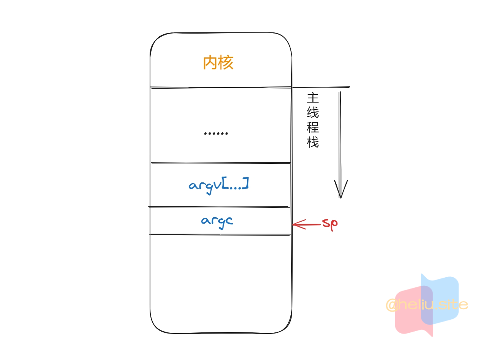
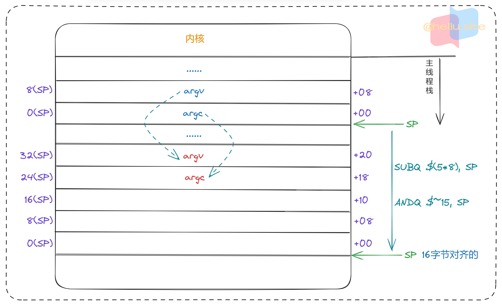
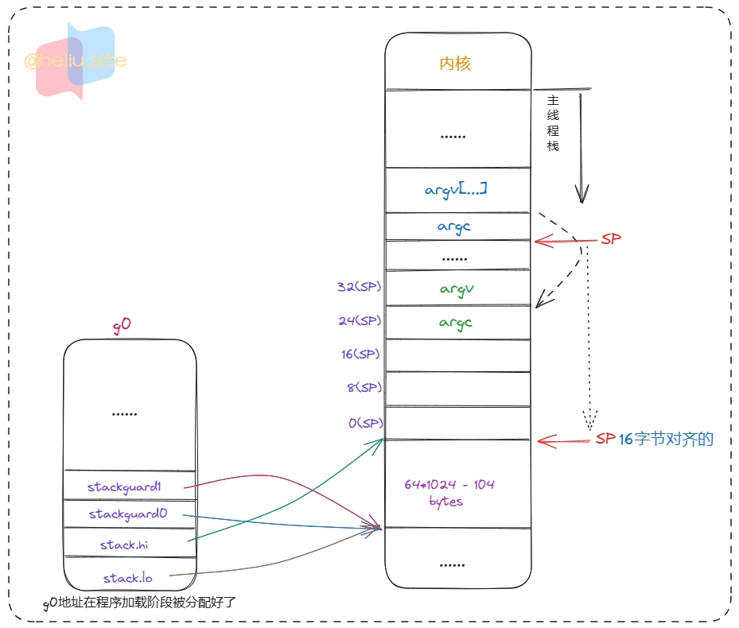
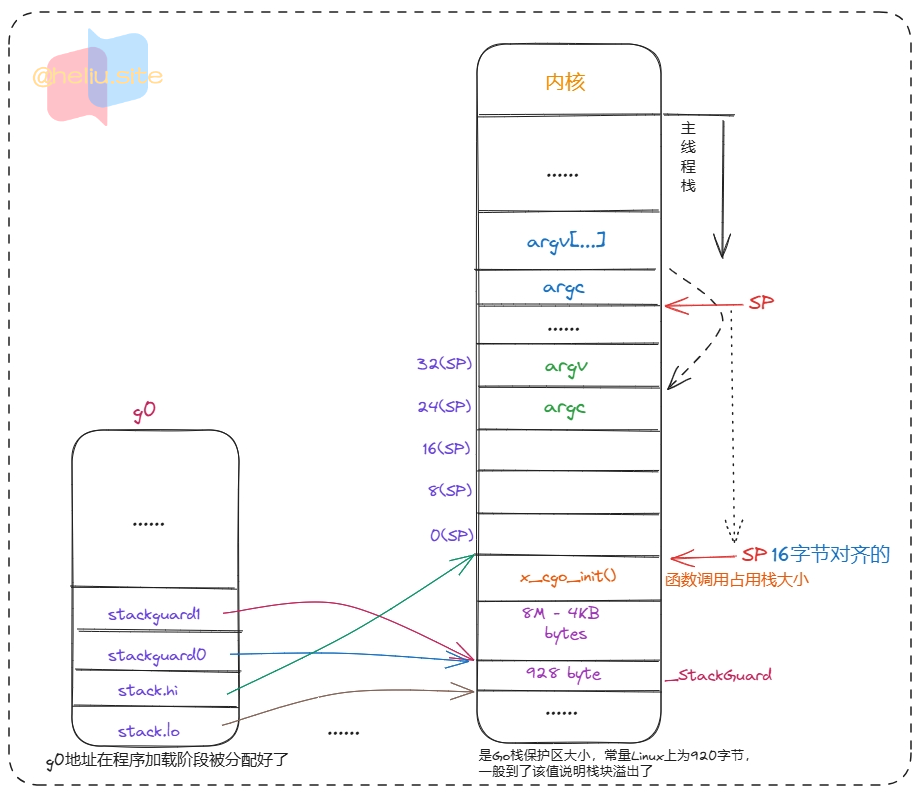
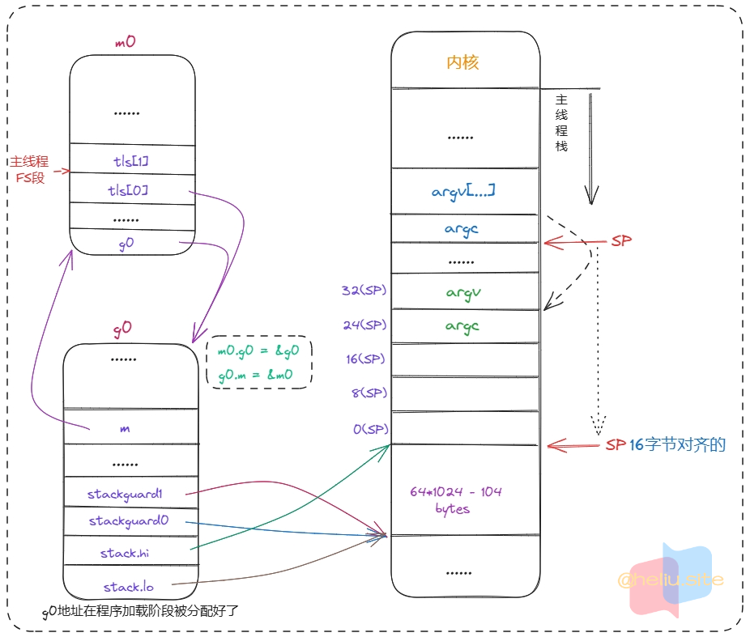
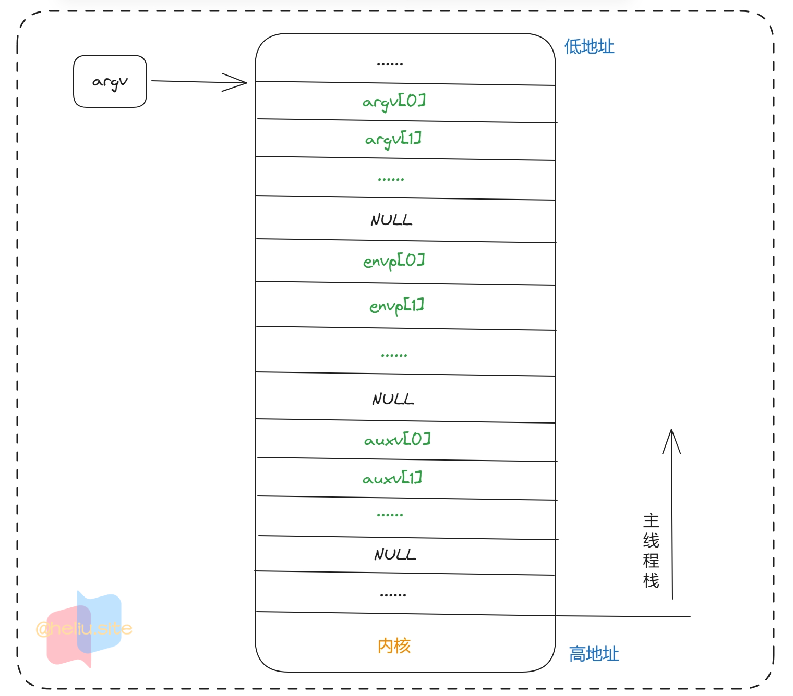
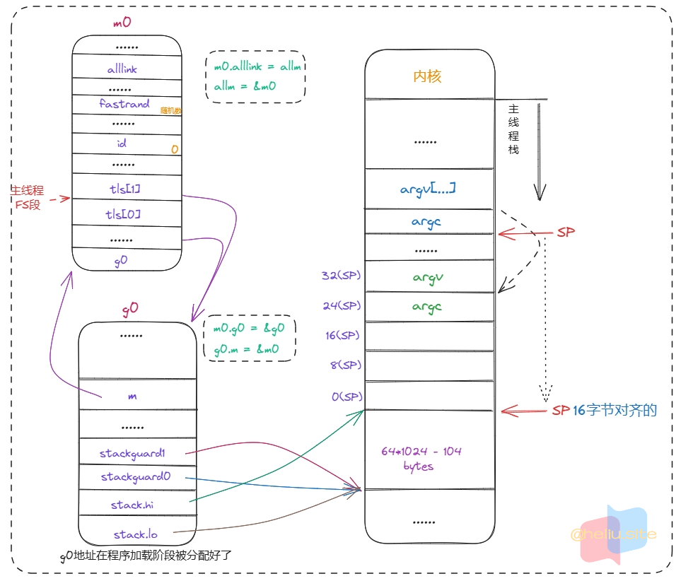
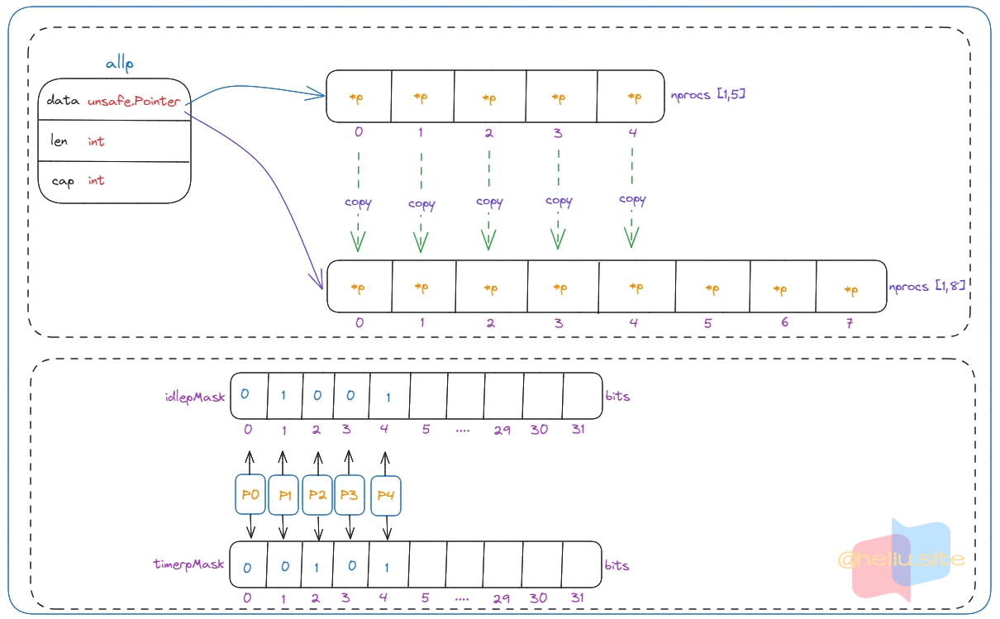
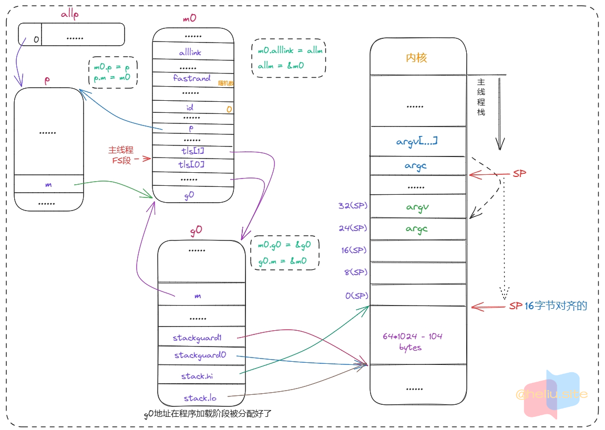
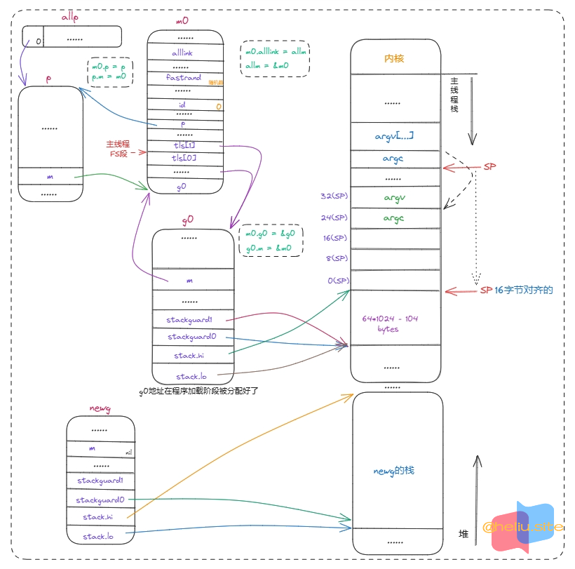

- 示例代码。
1
2
3
4
5
6
7
|
package main
import "fmt"
func main() {
fmt.Println("Hello World!")
}
|
程序加载阶段#
- 程序在被操作系统加载起来运行时都会依次经过如下阶段：
- 从磁盘上把可执行程序读入内存。
- 创建进程和主线程。
- 为主线程分配栈空间。
- 把由用户在命令行输入的参数拷贝到主线程的栈。
- 把主线程放入操作系统的运行队列等待被调度执行起来运行。
- 在主线程第一次被调度起来执行第一条指令之前，主线程的函数栈如下图所示：
sp指向栈顶。

- 相关概念：
rsp：指向当前栈的栈顶，表示当前栈已经用到什么位置。rbp：指向当前栈的栈底，表示当前栈的起点位置。rip：CPU即将执行的下一条指令在内存中的地址，控制着程序的流程。SB：GO汇编相关的虚拟寄存器，保存程序地址空间的起始地址。
SB寄存器保存的是当前函数在代码区的起始位置。- 出现在
GO汇编的函数定义、函数调用、全局变量定义以及对其引用会用到这个SB虚拟寄存器。
FP：GO汇编相关的虚拟寄存器，主要用来引用函数参数。
Go语言规定函数调用时参数都必须放在栈上，比如被调用函数使用first_arg+0(FP)来引用调用者传递进来的第一个参数。- 用
second_arg+8(FP)来引用第二个参数等。这里的first_arg和second_arg仅仅是一个帮助我们阅读源代码的符号。
- 对编译器来说无实际意义，+0和+8表示相对于
FP寄存器的偏移量。
$16-8：数字16说明此函数的栈帧大小为16字节，8说明此函数的参数和返回值一共需要占用8字节内存。
程序入口#
- 第一行代码：定义了
_rt0_amd64_linux这个符号，并不是真正的CPU指令。
NOSPLIT告诉编译器不要在这个函数中插入检查栈是否溢出的代码。
- 第二行的
JMP指令：才是主线程的第一条指令。
- 这条指令简单的跳转到（相当于
go语言或c中的goto关键字）_rt0_amd64 这个符号处继续执行。
- 文件位置：
go1.19.3/src/runtime/rt0_linux_amd64.s。
7
8
|
TEXT _rt0_amd64_linux(SB),NOSPLIT,$-8
JMP _rt0_amd64(SB)
|
- 前两行指令：把操作系统内核传递过来的参数
argc和argv数组的地址分别放在DI和SI寄存器中。
- 需要注意的是：【
MOVQ 0(SP), DI】拷贝的是argc的值是个8字节的存储的是参数的个数，是个数字。
- 【
LEAQ 8(SP), SI】则是取的argv的地址，是个指针*argv，也是8字节。
- 第三行指令：跳转到
rt0_go 去执行。
- 文件位置：
go1.19.3/src/runtime/asm_amd64.s。
11
12
13
14
15
16
17
18
19
|
# _rt0_amd64 is common startup code for most amd64 systems when using
# internal linking. This is the entry point for the program from the
# kernel for an ordinary -buildmode=exe program. The stack holds the
# number of arguments and the C-style argv.
TEXT _rt0_amd64(SB),NOSPLIT,$-8
MOVQ 0(SP), DI # DI = argc
# 假设SP存储值为0x00ff00，则SI=0x00ff08，指向的是 *argv
LEAQ 8(SP), SI # SI = 8(SP); *argv
JMP runtime·rt0_go(SB)
|
rt0_go函数完成了go程序启动时的所有初始化工作。- 第
4条指令（ANDQ $~15, SP）：
- 用于调整栈顶寄存器的值使其按16字节对齐，也就是让栈顶寄存器
SP指向的内存的地址为16的倍数。
- 之所以要按16字节对齐，是因为CPU有一组SSE指令，这些指令中出现的内存地址必须是16的倍数。
- 最后两条指令：把
argc和argv搬到新的位置。
- 文件位置：
go1.19.3/src/runtime/asm_amd64.s。
159
160
161
162
163
164
165
166
167
168
169
170
171
172
|
TEXT runtime·rt0_go(SB),NOSPLIT|TOPFRAME,$0
# copy arguments forward on an even stack
#
# 在偶数栈上向前复制参数
# argc是个8字节的数值，因此AX存储的是拷贝的值
# argv根据前面可知，这里BX存储的是argv的地址，因此原数据还在8(SP)的位置
MOVQ DI, AX # AX=argc
MOVQ SI, BX # BX=*argv
SUBQ $(5*8), SP # 3args 2auto
# $~15：0000_1111 -> 1111_0000
# 经过 ANDQ 调整后，一定是大于等于40byte
ANDQ $~15, SP # 调整栈顶寄存器使其按16字节对齐
MOVQ AX, 24(SP) # argc放在SP+24字节处
MOVQ BX, 32(SP) # argv放在SP+32字节处，此时是argv的地址，*argv
|

- 总结：这部分代码完成了
argc和argv的拷贝（argv是拷贝了地址，argv则是拷贝了副本值），栈按照16字节对齐了。
初始化g0#
g0的主要作用是提供一个栈供runtime代码执行，因此这里主要对g0的几个与栈有关的成员进行了初始化。- 从这里可以看出
g0的栈大约有64KB，地址范围为SP - 64*1024 + 104 ～ SP。
- 注意：虽然这里给
g0指定了大概64KB大小的栈空间大小，但是SP寄存器的值却没有减去64KB大小。
- 文件位置：
go1.19.3/src/runtime/asm_amd64.s。
168
169
170
171
172
173
174
175
176
177
178
179
180
181
|
# create istack out of the given (operating system) stack.
# _cgo_init may update stackguard.
# 从给定的操作系统栈中创建 istack (自己的栈)。_cgo_init 可能会更新 stackguard。
# 下面这段代码从系统线程的栈空分出一部分当做g0的栈，然后初始化g0的栈信息和stackgard
MOVQ $runtime·g0(SB), DI # DI = &g0
LEAQ (-64*1024+104)(SP), BX # BX = SP - 64*1024 + 104
# g0.stackguard0和g0.stackguard1用于栈溢出检查，实现栈的自动伸缩，抢占调度也会用到stackguard0
MOVQ BX, g_stackguard0(DI) # g0.stackguard0 = SP - 64*1024 + 104
MOVQ BX, g_stackguard1(DI) # g0.stackguard1 = SP - 64*1024 + 104
# g0.stack 主要用来记录goroutine所使用的栈，[lo, hi)
# g0.stack.lo 栈顶，指向内存低地址
# g0.stack.hi 栈底，指向内存高地址
MOVQ BX, (g_stack+stack_lo)(DI) # g0.stack.lo = SP - 64*1024 + 104 lo
MOVQ SP, (g_stack+stack_hi)(DI) # g0.stack.hi = SP hi
|
- 运行完上面这几行指令后
g0与栈之间的关系如下图所示：

- 总结：这部分代码给
g0预留了大约64KB的小的栈空间（注意这里的SP寄存器值并没有被修改），设置了stack、stackguard0、stackguard1字段，这些字段都是与g0栈相关的。
CPU 相关#
- 调用
CPU相关指令，尝试获取CPU相关信息，比如CPU的厂商、处理器型号等，如果获取成功则记录在全局变量中。
- 判断是否需要调用初始化
CGO相关函数（程序中有相关C代码则会调用，没有则不会调用）。
- 文件位置：
go1.19.3/src/runtime/asm_amd64.s。
177
178
179
180
181
182
183
184
185
186
187
188
189
190
191
192
193
194
195
196
197
198
199
200
201
202
203
204
205
206
207
208
209
210
211
212
213
214
215
216
217
218
219
220
221
222
223
224
225
226
227
228
229
230
231
232
233
234
235
236
237
238
239
240
241
242
243
244
245
246
247
248
249
250
251
252
253
254
255
256
257
258
259
260
261
262
263
264
265
266
267
268
269
270
271
272
273
274
275
276
277
278
279
280
281
282
283
284
285
286
287
288
289
290
291
292
293
294
295
296
297
298
299
300
301
302
303
304
305
306
307
308
309
310
311
312
313
314
315
316
317
318
|
# find out information about the processor we're on
#
# 找出我们正在使用的处理器信息
# EAX寄存器设置为编号0，因为CPUID指令会使用到该寄存器。
MOVL $0, AX # EAX = 0
# CPUID 是一种用于查询处理器信息的指令，它可以返回处理器支持的功能列表和特性信息。
# CPUID 指令需要将查询信息的编号存储在 EAX 寄存器中，然后执行 CPUID 指令。
# 处理器将返回结果存储在 EAX、EBX、ECX 和 EDX 四个寄存器中，具体的返回值格式和含义取决于查询信息的编号。
# EAX 是 0 时：返回最大支持的功能编号（包括该编号）和厂商 ID（12 个字符）。
# 1. EAX：返回最大支持的功能编号
# 2. EBX：如果是 Inter 返回 "Genu"。如果是 AMD 返回 "Auth" 。
# 3. ECX：如果是 Inter 返回 "ntel"。如果是 AMD 返回 "enti" 。
# 4. EDX：如果是 Inter 返回 "ntel"。如果是 AMD 返回 "cAMD" 。
# Genuntelntel是英特厂商名称。AuthenticAMD表示是AMD厂商名称。
# EAX 是 1 时：返回处理器的基本信息，包括处理器型号、系列、扩展型号、扩展系列等。
# 1. EAX 的位0-3将包含处理器类型编码，位4-7将包含处理器家族编码，位8-11将包含处理器型号编码，
# 位12-13将包含处理器扩展型号编码，位14-15将包含处理器扩展家族编码。
# 2. EBX、ECX、EDX 三个寄存器将包含其他处理器特性的信息。此处我们不关心这些数据。
# 查询 CPU 支持的功能列表（编号 0）：0、1、2、4、0x80000000、0x80000001
# 1. EAX 的值为 0x0：返回最大支持的功能编号（包括该编号）和厂商 ID（12 个字符）。
# 2. EAX 的值为 0x1：返回处理器的基本信息，包括处理器型号、系列、扩展型号、扩展系列等。
# 3. EAX 的值为 0x80000000h：返回最大支持的扩展功能编号和厂商 ID（12 个字符）。
# 4. EAX 的值为 0x80000001h：返回处理器的扩展信息，包括扩展特性、虚拟化支持等。
CPUID
CMPL AX, $0
JE nocpuinfo # AX == 0，没有CPU信息
# 以下判断当前处理器是否是 GenuineIntel
# BX != "Genu"; JNE 就会跳转
CMPL BX, $0x756E6547 # "Genu"
JNE notintel # 不是英特处理器时
# BX != "ineI"; JNE 就会跳转
CMPL DX, $0x49656E69 # "ineI"
JNE notintel # 不是英特处理器时
# BX != "ntel"; JNE 就会跳转
CMPL CX, $0x6C65746E # "ntel"
JNE notintel # 不是英特处理器时
# 将runtime的全局变量 isIntel 设置为 1
# 该变量在 runtime/runtime2.go 全局变量中
# 表示当前处理器是 GenuineIntel
MOVB $1, runtime·isIntel(SB)
notintel: # 不是intel
# Load EAX=1 cpuid flags
MOVL $1, AX
CPUID
# 将runtime的全局变量 processorVersionInfo 设置为 AX
# AX寄存器存储的是处理器的标识，可以识别特定的处理器。
# 由于判断CPU是否支持相关的指令集，比如AVX指令集。
MOVL AX, runtime·processorVersionInfo(SB)
nocpuinfo: # 没有cpu信息
# if there is an _cgo_init, call it.
#
# 如果存在_cgo_init，则调用它。代码中存在调用C相关函数时这里AX会有值并判断成功
# cgo_init函数是一个内部函数，用于初始化C语言代码和Go代码之间的接口。
# cgo_init函数是Go运行时系统的一部分，它在程序启动时被自动调用。
# 它会初始化cgo相关的全局变量，设置cgo的信号处理器，并将C语言代码中的函数指针转换为Go语言中的函数类型，
# 以便能够在Go语言中调用它们。
# 使用 CGO 的情况下：
# 1. Go会创建一个C语言的线程，并使用线程本地存储（Thread-Local Storage，TLS）来存储C语言函数所需要的数据。
# 2. 当使用cgo调用C语言函数时，cgo会自动初始化这个线程的TLS。这个初始化是在_cgo_init函数中完成的，
# 这个函数是由Go编译器自动生成的。
MOVQ _cgo_init(SB), AX
# 将寄存器 AX 中的值与自己进行按位逻辑与运算，并更新标志寄存器的值。
# 如果全部为 1，那么结果就是非零值，否则就是零。
# 这条指令的作用就是判断 AX 的值是否为零。
TESTQ AX, AX
# 这条指令是一个条件跳转指令，它会根据上一条指令更新的标志寄存器的值来判断是否跳转到目标标签 needtls。
# JZ 是“Jump if Zero”的缩写，意思是如果上一条指令的【结果为零】，则跳转到目标标签。
# 跳转这里表示修改去 TLS 设置
JZ needtls # 没有 _cgo_init 函数时跳转到 needtls
# arg 1: g0, already in DI
# 参数1：g0, 已经在 DI 中，前面初始化g0时放入DI中的
# 参数2：setg_gcc 放入 SI
MOVQ $setg_gcc<>(SB), SI # arg 2: setg_gcc
#ifdef GOOS_android
MOVQ $runtime·tls_g(SB), DX # arg 3: &tls_g
# arg 4: TLS base, stored in slot 0 (Android's TLS_SLOT_SELF).
# Compensate for tls_g (+16).
MOVQ -16(TLS), CX
#else
# 参数3,4：都为0，使用平台的TLS时不使用
MOVQ $0, DX # arg 3, 4: not used when using platform's TLS
MOVQ $0, CX
#endif
#ifdef GOOS_windows
# Adjust for the Win64 calling convention.
MOVQ CX, R9 # arg 4
MOVQ DX, R8 # arg 3
MOVQ SI, DX # arg 2
MOVQ DI, CX # arg 1
#endif
# DI、SI、DX、CX参数已准备好
# DI = &g0
# SI = setg_gcc
# DX = 0
# CX = 0
# AX=_cgo_init; 调用 _cgo_init 函数
CALL AX
# update stackguard after _cgo_init
# 在 _cgo_init 后更新 stackguard，因为更新了stack.lo的值了。
MOVQ $runtime·g0(SB), CX # CX = &g0
MOVQ (g_stack+stack_lo)(CX), AX # AX = g0.stack.lo; lo = SP + 8MB - 4KB
# _StackGuard 是 928byte
ADDQ $const__StackGuard, AX # AX = AX + _StackGuard
# g0.stackguard0 = g0.stack.lo + _StackGuard
# g0.stack.lo = SP + 8MB - 4KB
# stackguard0 用于 runtime 栈溢出判断。
MOVQ AX, g_stackguard0(CX)
# g0.stackguard1 = g0.stack.lo + _StackGuard
# stackguard1 被 g0 和 gsignal 中的C代码使用。用于栈溢出判断
MOVQ AX, g_stackguard1(CX)
## 这里是 ifndef，不是windows则JMP ok不需要去TLS
## 这种情况发生在 _cgo_init 函数被调用时候
#
#ifndef GOOS_windows
JMP ok
#endif
needtls: ## 需要TLS的情况判断
#ifdef GOOS_plan9
# skip TLS setup on Plan 9
JMP ok ## 跳过TLS设置，不要手动设置
#endif
#ifdef GOOS_solaris
# skip TLS setup on Solaris
JMP ok ## 跳过TLS设置，不要手动设置
#endif
#ifdef GOOS_illumos
# skip TLS setup on illumos
JMP ok ## 跳过TLS设置，不要手动设置
#endif
#ifdef GOOS_darwin
# skip TLS setup on Darwin
JMP ok ## 跳过TLS设置，不要手动设置
#endif
#ifdef GOOS_openbsd
# skip TLS setup on OpenBSD
JMP ok ## 跳过TLS设置，不要手动设置
#endif
|
cgo初始化
- 初始化
C 语言代码和 Go 代码之间的接口。
- 参数：
G *g：&runtime.g0。void (*setg)(void*)：setg_gcc函数。void **tlsg：NULL。void **tlsbase：NULL。
- 文件位置：
go1.19.3/src/runtime/cgo/gcc_linux_amd64.c。
- 该函数只是设置了g0栈的
stack.lo = SP - 8MB + 4KB，并没有创建新的线程。
- 这段代码执行了以下重要任务：
- 线程栈的初始化和设置：
- Go运行时使用goroutines来并发执行代码，每个goroutine有自己的栈。
- 当使用cgo时，Go运行时需要与C代码的线程栈进行交互。
- 这段代码确保了C线程的栈与Go运行时的栈设置是一致的。
- 栈边界设置：
- 设置stacklo字段是为了确定goroutine栈的底部位置。
- 在Go中，每个goroutine的栈都有一个底部和顶部，stacklo和stackhi分别代表栈的底部和顶部地址。
- 以下是为什么要这样设置的原因：
- 安全边界：通过将stacklo设置为距离栈顶8MB减去4KB的位置，代码为栈溢出检测留出了空间。如果goroutine的栈增长超过了这个设置的范围，那么它将触发栈溢出错误，而不是覆盖其他内存，这有助于防止内存损坏。
- 栈空间预留：在C和Go代码之间进行切换时，可能需要额外的栈空间来处理函数调用、参数传递等。预留空间可以确保在这些操作中有足够的空间，避免栈溢出。
- 与Go运行时栈管理兼容：Go运行时负责管理goroutines的栈，包括栈的增长和收缩。这段代码确保了C线程的栈与Go运行时的栈管理策略兼容。
- 初始化setg_gcc：setg_gcc是一个全局变量，用于在C代码中设置当前的goroutine。在C代码中调用Go函数时，需要正确设置当前的goroutine，这样Go运行时才能正确管理goroutine的状态。
- 总的来说，这段代码是cgo初始化的一部分，目的是为了确保C线程的栈与Go运行时的goroutine栈能够正确地协同工作，同时保持栈的安全性和性能。
14
15
16
17
18
19
20
21
22
23
24
25
26
27
28
29
30
31
32
33
34
35
36
37
38
39
40
41
42
43
44
45
46
47
48
49
50
51
52
53
54
55
56
57
58
59
60
61
62
63
64
65
66
67
|
static void (*setg_gcc)(void*);
// This will be set in gcc_android.c for android-specific customization.
void (*x_cgo_inittls)(void **tlsg, void **tlsbase) __attribute__((common));
void
x_cgo_init(G *g, void (*setg)(void*), void **tlsg, void **tlsbase)
{
// 申明一个 pthread_attr_t 类型变量 *attr，指针类型.
// pthread_attr_t 是线程的属性结构
pthread_attr_t *attr;
// 申明一个 size_t 类型变量 size。
size_t size; // 用于保存新创建的这个线程的栈大小
/* The memory sanitizer distributed with versions of clang
before 3.8 has a bug: if you call mmap before malloc, mmap
may return an address that is later overwritten by the msan
library. Avoid this problem by forcing a call to malloc
here, before we ever call malloc.
This is only required for the memory sanitizer, so it's
unfortunate that we always run it. It should be possible
to remove this when we no longer care about versions of
clang before 3.8. The test for this is
misc/cgo/testsanitizers.
GCC works hard to eliminate a seemingly unnecessary call to
malloc, so we actually use the memory we allocate. */
setg_gcc = setg; // 向setg_gcc全局静态变量赋值setg_gcc()函数的地址
// 向操作系统申请 *attr 类型需要的内存，其实就是一个指针大小。
attr = (pthread_attr_t*)malloc(sizeof *attr);
if (attr == NULL) { // 申请失败
fatalf("malloc failed: %s", strerror(errno));
}
// 初始化线程属性对象；创建的默认栈大小为8M
pthread_attr_init(attr);
// pthread_attr_getstacksize 获取线程的栈大小
pthread_attr_getstacksize(attr, &size);
// __builtin_frame_address(0) 查看当前函数的栈帧地址，因此和SP寄存器值相差不大
// 注意这里修改的是 stack.lo = SP - 8MB + 4KB，加上4KB是为了判断当前分配的栈是否超过4KB
// 因为g参数传递的是指针，这里直接修改了g0的stack.lo字段的值，这里相当于扩大了g0栈大小。
g->stacklo = (uintptr)__builtin_frame_address(0) - size + 4096;
// lo >= hi，错误的栈边界。hi->lo（高->低），判断是否溢出
if (g->stacklo >= g->stackhi)
fatalf("bad stack bounds: lo=%p hi=%p\n", g->stacklo, g->stackhi);
// 销毁 attr 这个线程属性对象
pthread_attr_destroy(attr);
free(attr); // 释放 attr 占用的内存
if (x_cgo_inittls) {
x_cgo_inittls(tlsg, tlsbase);
}
}
|
- 根据汇编代码可知，
setg_gcc()函数应该是把g放入TLS和R14寄存器中。
- 文件位置：
go1.19.3/src/runtime/asm_amd64.s。
1049
1050
1051
1052
1053
1054
|
# void setg_gcc(G*); set g called from gcc.
TEXT setg_gcc<>(SB),NOSPLIT,$0
get_tls(AX)
MOVQ DI, g(AX)
MOVQ DI, R14 # set the g register
RET
|
- 传入给
x_cgo_init的G *g参数其实是g0，而g0结构体第一个字段就是stack，包含stacklo和stackhi，因此能直接转换。
- 文件位置：
go1.19.3/src/runtime/cgo/libcgo.h。
17
18
19
20
21
22
23
24
25
26
27
|
/*
* The beginning of the per-goroutine structure,
* as defined in ../pkg/runtime/runtime.h.
* Just enough to edit these two fields.
*/
typedef struct G G;
struct G
{
uintptr stacklo;
uintptr stackhi;
};
|
- 总结：这部分代码，尝试获取
CPU相关信息并保存在全局变量中。判断是否存在CGO相关初始化，如果需要则从新设置g0的栈大小。
- 运行完上面这cgo初始化与栈之间的关系如下图所示：

主线程与m0绑定#
设置tls#
- 设置好
g0栈之后，获取到CPU型号以及cgo初始化后，设置工作线程TLS。
- 调用
settls函数初始化主线程的线程本地存储(TLS)，目的是把m0与主线程关联在一起。
- 设置了线程本地存储之后接下来的几条指令在于验证
TLS功能是否正常，如果不正常则直接abort退出程序。
- 文件位置：
go1.19.3/src/runtime/asm_amd64.s。
250
251
252
253
254
255
256
257
258
259
260
261
262
263
264
265
266
267
268
269
270
271
272
273
274
|
# 1) 设置 TLS
# 下面开始初始化tls（thread local storage，线程本地存储）
# LEA将内存地址赋值给DI，取m0的tls成员的地址到DI寄存器
LEAQ runtime·m0+m_tls(SB), DI # DI=&m0.tls
# 调用settls设置线程本地存储，settls函数的参数在DI寄存器中
CALL runtime·settls(SB)
# 2) 验证 TLS 是否可用
# store through it, to make sure it works
#
# 通过它进行存储，以确保它有效
# 验证settls是否可以正常工作，如果有问题则abort退出程序
get_tls(BX) # 获取fs段基地址并放入BX寄存器，其实就是m0.tls[1]的地址，get_tls的代码由编译器生成
# 通过 FS 寄存器存储的值进行设置
MOVQ $0x123, g(BX) # 把整型常量0x123拷贝到fs段基地址偏移-8的内存位置，也就是m0.tls[0]=0x123
# 通过 runtime.mtls[0] 进行取值
MOVQ runtime·m0+m_tls(SB), AX # AX=m0.tls[0]，MOV将值赋值给AX
# 比较 AX 与 $0x123 是否相等
CMPQ AX, $0x123 # 检查m0.tls[0]的值是否通过线程本地存储存入的0x123来验证tls功能是否正常
# 如果前面的比较结果是相等，跳转到当前指令地址加2个字节的位置（即下一条指令）
# 如果比较结果不是相等，则继续执行下一条指令。
JEQ 2(PC) # 跳过下面这一条指令
CALL runtime·abort(SB) # 如果线程本地存储不能正常工作，退出程序
|
runtime·settls(SB)
- 将
tls-base设置为DI寄存器的值，DI寄存器存储的是m0.tls的地址。
- 通过
arch_prctl系统调用把m0.tls[1]的地址设置成了fs段的段基址。
CPU中有个叫fs的段寄存器与之对应：
- 而每个线程都有自己的一组
CPU寄存器值，操作系统在把线程调离CPU运行时会帮我们把所有寄存器中的值保存在内存中。
- 调度线程起来运行时又会从内存中把这些寄存器的值恢复到
CPU。在此之后工作线程代码就可以通过fs寄存器来找到m.tls。
- 文件位置：
go1.19.3/src/runtime/sys_linux_amd64.s。
638
639
640
641
642
643
644
645
646
647
648
649
650
651
652
653
654
655
656
657
658
659
660
661
662
663
664
665
666
667
668
669
670
|
# set tls base to DI
TEXT runtime·settls(SB),NOSPLIT,$32
#ifdef GOOS_android
# Android stores the TLS offset in runtime·tls_g.
SUBQ runtime·tls_g(SB), DI
#else
# DI寄存器中存放的是m.tls[0]的地址，m的tls成员是一个数组
# 下面这一句代码把DI寄存器中的地址加8，为什么要+8呢，主要跟ELF可执行文件格式中的TLS实现的机制有关
# 执行下面这句指令之后DI寄存器中存放的就是m.tls[1]的地址了
ADDQ $8, DI # ELF wants to use -8(FS)
#endif
# AMD64 Linux平台约定在进行系统调用时使用：
# 1. rax寄存器存放系统调用编号
# 2. 同时约定使用rdi, rsi, rdx, r10, r8和r9来传递前6个系统调用参数
# 下面通过arch_prctl系统调用设置FS段基地址
# arch_prctl系统调用的第二个参数，设置该值为FS段基地址
MOVQ DI, SI # SI = DI
# arch_prctl的第一个参数：ARCH_SET_FS 参数值表示设置线程的TLS地址的。
# 在 x86 架构中，FS 寄存器用于存储 TLS （Thread Local Storage）的地址
MOVQ $0x1002, DI # ARCH_SET_FS
# AX 系统调用编号
MOVQ $SYS_arch_prctl, AX
# AX = $SYS_arch_prctl
# DI = ARCH_SET_FS
# SI = &m.tls[1]
SYSCALL # 系统调用，进入内核
# 判断系统调用是否成功
# 将 AX 寄存器中的值与 0xfffffffffffff001 进行比较
# 如果 AX 中的值小于等于 0xfffffffffffff001，则跳转到当前指令地址加上2的地址（即跳转到下一条指令的下一条指令）。
CMPQ AX, $0xfffffffffffff001
JLS 2(PC) # 跳过以下两条指令
MOVL $0xf1, 0xf1 # crash 系统调用失败直接crash，失败原因是把$0xf1放入不存在地址里面
RET # 直接返回
|
- 相关宏定义。
- 文件位置：
go1.19.3/src/runtime/go_tls.h。
9
10
11
12
|
#ifdef GOARCH_amd64
#define get_tls(r) MOVQ TLS, r // get_tls函数定义，TLS其实就是FS寄存器的值
#define g(r) 0(r)(TLS*1) // (r + TLS*1 + 0)
#endif
|
m0绑定#
- 首先把
g0的地址放入主线程的线程本地存储（TLS）中，然后通过【m0.g0=&g0】【g0.m=&m0】把m0和g0绑定在一起。
- 之后在主线程中通过
get_tls可以获取到g0，通过g0的m成员又可以找到m0。
- 保存在主线程本地存储中的值是
g0的地址，也就是说工作线程的私有全局变量其实是一个指向g的指针而不是指向m的指针。
- 目前这个指针指向
g0，表示代码正运行在g0栈。
- 文件位置：
go1.19.3/src/runtime/asm_amd64.s。
264
265
266
267
268
269
270
271
272
273
274
275
276
277
278
279
280
281
282
283
284
285
286
287
288
289
290
291
292
|
ok:
# 1) g0 与 TLS 绑定
# set the per-goroutine and per-mach "registers"
get_tls(BX) # 获取fs段基地址到BX寄存器
LEAQ runtime·g0(SB), CX # CX = &g0; var g0 g;
# 把g0的地址保存在线程本地存储里面
MOVQ CX, g(BX) # m0.tls[0]=&g0
LEAQ runtime·m0(SB), AX # AX = &m0; var m0 m;
# 2) m0 和 g0 相互绑定
# m0.g0 = &g0
# g0.m = &m0
# save m->g0 = g0
MOVQ CX, m_g0(AX) # m0.g0=g0
# save m0 to g0->m
# m的第一个字段就是m0.g0所以这里AX代表的就是m0.g0的地址处
MOVQ AX, g_m(CX) # g0.m=m0
# CLD 指令是 Clear Direction Flag 的缩写。用于将方向标志位 DF（Direction Flag）清零。
# 在x86架构的计算机中，方向标志位DF是一个标志寄存器中的一位，用于指示字符串操作指令（如 MOVSB、LODSB、STOSB 等）
# 在执行时是按照递增方向还是递减方向进行操作。
# 当 DF 为 0 时，字符串指针将按照递增方向移动；当 DF 为 1 时，字符串指针将按照递减方向移动。
# CLD 指令将方向标志位 DF 清零，表示字符串操作指令将按照递增方向进行操作。
# 如果我们使用MOVSB指令将一个长度为10字节的字符串从存储器中复制到寄存器中，它会按照递增方向从存储器中的第一个字节开始读取数据，
# 并将它们复制到寄存器中。然后，它会递增存储器地址和寄存器地址，以便读取和复制下一个字节，直到整个字符串被复制到寄存器中为止。
# 意思是，在使用字符串操作指令时，这些指令会按照递增方向操作，即按照存储器地址递增的顺序复制数据。
CLD # convention is D is always left cleared
|
- 此时，主线程，
m0，g0以及g0的栈之间的关系如下图所示：

- 总结：这段函数通过
runtime·settls()函数把当前工作线程的FS寄存器地址设置为&m0.tls[1]地址的值，然后再验证是否设置成功。然后把g0地址放入FS段寄存器中，也就是&m0.tls[0]处，表示当前工作线程正在执行g0。接着设置m0.g0=g0和g0.m=m0，把g0和m0相关联起。
- 编译器会在很多函数需要前封装一层把
g写入R14寄存器中。这里编译器会把g0写入R14寄存其中。
- 主要是
runtime·check()函数，检查内置类型的相关。
- 文件位置：
go1.19.3/src/runtime/asm_amd64.s。
278
279
280
281
282
283
284
285
286
287
288
289
290
291
292
293
294
295
296
297
298
299
300
301
302
303
304
305
306
307
308
309
310
311
312
313
314
315
316
317
318
319
320
321
322
323
324
325
326
327
328
329
330
331
332
333
334
335
336
337
338
339
340
341
342
|
# Check GOAMD64 reqirements
# We need to do this after setting up TLS, so that
# we can report an error if there is a failure. See issue 49586.
#
# 检查GOAMD64要求我们需要在设置TLS后执行此操作，以便在出现失败时报告错误。
#ifdef NEED_FEATURES_CX
MOVL $0, AX
CPUID
CMPL AX, $0
JE bad_cpu
MOVL $1, AX
CPUID
ANDL $NEED_FEATURES_CX, CX
CMPL CX, $NEED_FEATURES_CX
JNE bad_cpu
#endif
#ifdef NEED_MAX_CPUID
MOVL $0x80000000, AX
CPUID
CMPL AX, $NEED_MAX_CPUID
JL bad_cpu
#endif
#ifdef NEED_EXT_FEATURES_BX
MOVL $7, AX
MOVL $0, CX
CPUID
ANDL $NEED_EXT_FEATURES_BX, BX
CMPL BX, $NEED_EXT_FEATURES_BX
JNE bad_cpu
#endif
#ifdef NEED_EXT_FEATURES_CX
MOVL $0x80000001, AX
CPUID
ANDL $NEED_EXT_FEATURES_CX, CX
CMPL CX, $NEED_EXT_FEATURES_CX
JNE bad_cpu
#endif
#ifdef NEED_OS_SUPPORT_AX
XORL CX, CX
XGETBV
ANDL $NEED_OS_SUPPORT_AX, AX
CMPL AX, $NEED_OS_SUPPORT_AX
JNE bad_cpu
#endif
#ifdef NEED_DARWIN_SUPPORT
MOVQ $commpage64_version, BX
CMPW (BX), $13 # cpu_capabilities64 undefined in versions < 13
JL bad_cpu
MOVQ $commpage64_cpu_capabilities64, BX
MOVQ (BX), BX
MOVQ $NEED_DARWIN_SUPPORT, CX
ANDQ CX, BX
CMPQ BX, CX
JNE bad_cpu
#endif
# "TEXT runtime.check(SB)" 是由编译器实现，因为以下check方法由runtime的Go实现需要获取g。
# 编译器实现 "TEXT runtime.check(SB)" 是需要把g0写入R14中，然后JMP跳转到check
# 该函数在 go1.19.3/src/runtime/runtime1.go:check()
# 主要是检查go支持的变量内存情况，原子CAS函数等
CALL runtime·check(SB)
|
runtime·check(SB) 汇编开头几行。
TEXT runtime.check(SB) <autogenerated>
xorps xmm15, xmm15 # 清除xmm15寄存器，可能后面函数需要使用
mov r14, qword ptr fs:[0xfffffff8] # R14 = g0
jmp $runtime.check # 跳转 check() 函数
runtime.check()的源码定义在/src/runtime/runtime1.go文件中。
142
143
144
145
146
147
148
149
150
151
152
153
154
155
156
157
158
159
160
161
162
163
164
165
166
167
168
169
170
171
172
173
174
175
176
177
178
179
180
181
182
183
184
185
186
187
188
189
190
191
192
193
194
195
196
197
198
199
200
201
202
203
204
205
206
207
208
209
210
211
212
213
214
215
216
217
218
219
220
221
222
223
224
225
226
227
228
229
230
231
232
233
234
235
236
237
238
239
240
241
242
243
244
245
246
247
248
249
250
251
252
253
254
255
256
257
258
259
260
261
262
263
264
265
266
267
268
269
270
271
272
273
274
275
276
277
278
279
280
281
282
283
284
285
286
287
288
289
290
291
292
293
294
295
296
297
298
|
func check() {
var (
a int8
b uint8
c int16
d uint16
e int32
f uint32
g int64
h uint64
i, i1 float32
j, j1 float64
k unsafe.Pointer
l *uint16
m [4]byte
)
type x1t struct {
x uint8
}
type y1t struct {
x1 x1t
y uint8
}
var x1 x1t
var y1 y1t
// 检查 int8 类型占用字节长度
if unsafe.Sizeof(a) != 1 {
throw("bad a")
}
// 检查 uint8 类型占用字节长度
if unsafe.Sizeof(b) != 1 {
throw("bad b")
}
if unsafe.Sizeof(c) != 2 {
throw("bad c")
}
if unsafe.Sizeof(d) != 2 {
throw("bad d")
}
if unsafe.Sizeof(e) != 4 {
throw("bad e")
}
if unsafe.Sizeof(f) != 4 {
throw("bad f")
}
if unsafe.Sizeof(g) != 8 {
throw("bad g")
}
if unsafe.Sizeof(h) != 8 {
throw("bad h")
}
if unsafe.Sizeof(i) != 4 {
throw("bad i")
}
if unsafe.Sizeof(j) != 8 {
throw("bad j")
}
if unsafe.Sizeof(k) != goarch.PtrSize {
throw("bad k")
}
if unsafe.Sizeof(l) != goarch.PtrSize {
throw("bad l")
}
if unsafe.Sizeof(x1) != 1 {
throw("bad unsafe.Sizeof x1")
}
if unsafe.Offsetof(y1.y) != 1 {
throw("bad offsetof y1.y")
}
if unsafe.Sizeof(y1) != 2 {
throw("bad unsafe.Sizeof y1")
}
if timediv(12345*1000000000+54321, 1000000000, &e) != 12345 || e != 54321 {
throw("bad timediv")
}
var z uint32
z = 1
// 检查原子操作相关
if !atomic.Cas(&z, 1, 2) {
throw("cas1")
}
if z != 2 {
throw("cas2")
}
z = 4
if atomic.Cas(&z, 5, 6) {
throw("cas3")
}
if z != 4 {
throw("cas4")
}
z = 0xffffffff
if !atomic.Cas(&z, 0xffffffff, 0xfffffffe) {
throw("cas5")
}
if z != 0xfffffffe {
throw("cas6")
}
m = [4]byte{1, 1, 1, 1}
atomic.Or8(&m[1], 0xf0)
if m[0] != 1 || m[1] != 0xf1 || m[2] != 1 || m[3] != 1 {
throw("atomicor8")
}
m = [4]byte{0xff, 0xff, 0xff, 0xff}
atomic.And8(&m[1], 0x1)
if m[0] != 0xff || m[1] != 0x1 || m[2] != 0xff || m[3] != 0xff {
throw("atomicand8")
}
*(*uint64)(unsafe.Pointer(&j)) = ^uint64(0)
if j == j {
throw("float64nan")
}
if !(j != j) {
throw("float64nan1")
}
*(*uint64)(unsafe.Pointer(&j1)) = ^uint64(1)
if j == j1 {
throw("float64nan2")
}
if !(j != j1) {
throw("float64nan3")
}
*(*uint32)(unsafe.Pointer(&i)) = ^uint32(0)
if i == i {
throw("float32nan")
}
if i == i {
throw("float32nan1")
}
*(*uint32)(unsafe.Pointer(&i1)) = ^uint32(1)
if i == i1 {
throw("float32nan2")
}
if i == i1 {
throw("float32nan3")
}
testAtomic64()
if _FixedStack != round2(_FixedStack) {
throw("FixedStack is not power-of-2")
}
if !checkASM() {
throw("assembly checks failed")
}
}
|
- 总结：这段代码主要是调用了
runtime·check()函数，该函数主要是检查编译器是否按照预期，检查了相关内存占用值和原子操作等。
初始化m0#
- 处理命令行参数，调用
osinit函数获取CPU核的数量并保存在全局变量ncpu之中，
- 调度器初始化时需要知道当前系统有多少个
CPU核。
- 调用
runtime.args()函数来暂存命令行参数以待后续解析。部分系统会在这里获取与硬件相关的一些参数，例如物理页面大小。
- 文件位置：
go1.19.3/src/runtime/asm_amd64.s。
338
339
340
341
342
343
344
345
346
347
348
349
350
|
# 1) 准备调用args函数，前面四条指令把参数放在栈上
MOVL 24(SP), AX # copy argc AX=argc
MOVL AX, 0(SP) # argc放在栈顶，为调用runtime·args的第一个参数，var argc int32
MOVQ 32(SP), AX # copy argv AX=*argv
MOVQ AX, 8(SP) # argv放在SP+8的位置，为调用runtime·args的第二个参数，var argv **byte
# 保存 argc和argv 遍历 auxv 设置 physPageSize 和 startupRandomData 以及处理 VDSO
# 处理操作系统传递过来的参数和env，复制全局变量argc和argv值，并处理系统参数赋值给cpu相关
CALL runtime·args(SB)
# 获取CPU核数保存在ncpu中，获取physHugePageSize参数。
# physHugePageSize 是分配大页面时候被用到。
CALL runtime·osinit(SB) # 执行的结果是全局变量ncpu = CPU核数
CALL runtime·schedinit(SB) # 调度系统初始化
|
args(SB) #
- 关于 argv 的分布图。
argv：是一个指向字符指针的指针数组，其中每个字符指针指向一个以 null 结尾的字符串，这些字符串代表了程序启动时在命令行上输入的参数。数组的第一个元素 argv[0] 通常包含了程序的名称或路径，而随后的元素 argv[1] 到 argv[argc-1] 包含了程序的实际参数。envp：是一个指向环境变量的指针数组，这些环境变量在程序启动时由操作系统传递给程序。每个数组元素都是一个以 null 结尾的字符串，表示一个键值对，其中键和值之间通过等号(=)连接。环境变量是操作系统用来存储有关当前会话或执行环境的信息的一种方式。它们通常用于配置程序的行为，提供路径信息，或者存储用户特定的设置。
- 以下是一些常见的环境变量及其用途：
- HOME：用户的主目录路径。
- PATH：执行命令时要搜索的目录列表。
- PWD：当前工作目录的路径。
- USER：当前登录的用户名。
- SHELL：用户登录的 shell 的路径。
- LANG：系统语言和地区设置。
- DISPLAY：X Window System 的显示变量，用于图形界面程序。
- EDITOR：用户的首选文本编辑器。
- TERM：终端类型。
auxv：为程序提供了关于其执行环境的额外信息。
- 以下是一些常见的 auxv 条目类型及其含义：
- AT_NULL：标志着 auxv 数组的结束。
- AT_EXECFD：执行文件的文件描述符。
- AT_PHDR：程序头表的地址。
- AT_PHENT：程序头表中每个条目的大小。
- AT_PHNUM：程序头表中的条目数量。
- AT_PAGESZ：系统的页面大小。
- AT_BASE：动态链接器的基地址。
- AT_ENTRY：程序的入口点地址。
- AT_UID：执行程序的用户的真实用户 ID。
- AT_EUID：执行程序的有效用户 ID。
- AT_GID：执行程序的组 ID。
- AT_EGID：执行程序的有效组 ID。
- AT_SECURE：指示程序是否在 “secure mode” 下执行。
- AT_RANDOM：提供随机值的指针，用于安全目的。

- 暂存命令行参数以待后续解析。
- 文件位置：
go1.19.3/src/runtime/runtime1.go。
66
67
68
69
70
71
72
73
74
75
76
77
|
func args(c int32, v **byte) {
// 保存 argc 和 argv
argc = c // runtime的全局变量中
argv = v // runtime的全局变量中
// 加载 auxv
sysargs(c, v)
}
var (
argc int32
argv **byte
)
|
sysargs()#
- 文件位置：
go1.19.3/src/runtime/os_linux.go。
224
225
226
227
228
229
230
231
232
233
234
235
236
237
238
239
240
241
242
243
244
245
246
247
248
249
250
251
252
253
254
255
256
257
258
259
260
261
262
263
264
265
266
267
268
269
270
271
272
273
274
275
276
277
278
279
280
281
282
283
284
285
286
|
func sysargs(argc int32, argv **byte) {
// 跳过 argv + NULL
n := argc + 1
// skip over argv, envp to get to auxv
// 跳过 argv 和 envp 直接到 auxv
for argv_index(argv, n) != nil {
n++
}
// skip NULL separator
n++ // 跳过 NULL
// now argv+n is auxv
// argv+n 后现在是 auxv。
auxv := (*[1 << 28]uintptr)(add(unsafe.Pointer(argv), uintptr(n)*goarch.PtrSize))
if sysauxv(auxv[:]) != 0 {
return
}
// In some situations we don't get a loader-provided
// auxv, such as when loaded as a library on Android.
// Fall back to /proc/self/auxv.
//
// 在某些情况下，我们不会得到加载器提供的auxv，比如在Android上作为库加载时。
// 回到 /proc/self/auxv，去加载信息。
// var procAuxv []byte = []byte("/proc/self/auxv\x00")
fd := open(&procAuxv[0], 0 /* O_RDONLY */, 0) // 打开指定文件句柄
if fd < 0 {
// On Android, /proc/self/auxv might be unreadable (issue 9229), so we fallback to
// try using mincore to detect the physical page size.
// mincore should return EINVAL when address is not a multiple of system page size.
const size = 256 << 10 // size of memory region to allocate
p, err := mmap(nil, size, _PROT_READ|_PROT_WRITE, _MAP_ANON|_MAP_PRIVATE, -1, 0)
if err != 0 {
return
}
var n uintptr
for n = 4 << 10; n < size; n <<= 1 {
err := mincore(unsafe.Pointer(uintptr(p)+n), 1, &addrspace_vec[0])
if err == 0 {
physPageSize = n
break
}
}
if physPageSize == 0 {
physPageSize = size
}
munmap(p, size)
return
}
var buf [128]uintptr
// 从当前文件中读取信息
n = read(fd, noescape(unsafe.Pointer(&buf[0])), int32(unsafe.Sizeof(buf)))
closefd(fd) // 关闭文件句柄
if n < 0 {
return
}
// Make sure buf is terminated, even if we didn't read
// the whole file.
// 确保buf被终止，即使我们没有读取整个文件。
buf[len(buf)-2] = _AT_NULL
sysauxv(buf[:])
}
|
argv_index()#
- 文件位置：
go1.19.3/src/runtime/runtime1.go。
59
60
61
62
63
64
|
// nosplit for use in linux startup sysargs
//
//go:nosplit
func argv_index(argv **byte, i int32) *byte {
return *(**byte)(add(unsafe.Pointer(argv), uintptr(i)*goarch.PtrSize))
}
|
sysauxv()#
- 设置
startupRandomData 用于Hash，physPageSize 物理内存页大小，如果这些存在的情况下。
- 设置全局变量物理页面大小等。
- 文件位置：
go1.19.3/src/runtime/os_linux.go。
283
284
285
286
287
288
289
290
291
292
293
294
295
296
297
298
299
300
301
302
303
304
305
|
func sysauxv(auxv []uintptr) int {
var i int
// 遍历auxv直到结束 _AT_NULL，一次性取两个分别是 tag 和 val
for ; auxv[i] != _AT_NULL; i += 2 {
tag, val := auxv[i], auxv[i+1]
switch tag {
case _AT_RANDOM:
// The kernel provides a pointer to 16-bytes
// worth of random data.
//
// 内核提供了一个指向16字节随机数据的指针。
// startupRandomData保存在启动时初始化的随机字节。这些来自ELF AT_RANDOM辅助向量。
startupRandomData = (*[16]byte)(unsafe.Pointer(val))[:]
case _AT_PAGESZ:
physPageSize = val // 如果是物理页大小设置该值
}
archauxv(tag, val) // 该函数在linux下是空
vdsoauxv(tag, val) // 处理 vdso
}
return i / 2
}
|
osinit(SB)#
runtime.osinit()函数中，所有的系统都会在这里获取CPU核心数，如果上一步runtime.args()没有成功获取物理页面大小，则部分系统会再次获取。Linux系统会在这里获取Huge物理页面的大小。- 文件位置：
go1.19.3/src/runtime/os_linux.go。
329
330
331
332
333
334
335
336
337
338
339
340
341
342
343
344
345
346
347
348
349
350
351
352
353
354
355
356
|
func osinit() {
// 获取 CPU 核数
ncpu = getproccount()
// 获取Linux中物理内存大页面大小。
// 大页面是指比普通页面（通常为 4KB）更大的页面大小，通常为 2MB 或 1GB。
// 使用大页面可以提高内存访问效率和系统性能，因为在使用大页面时，内核需要管理更少的页表和 TLB 条目。
// 该方法通过open去"/sys/kernel/mm/transparent_hugepage/hpage_pmd_size"路径读取的
physHugePageSize = getHugePageSize()
if iscgo {
// #42494 glibc and musl reserve some signals for
// internal use and require they not be blocked by
// the rest of a normal C runtime. When the go runtime
// blocks...unblocks signals, temporarily, the blocked
// interval of time is generally very short. As such,
// these expectations of *libc code are mostly met by
// the combined go+cgo system of threads. However,
// when go causes a thread to exit, via a return from
// mstart(), the combined runtime can deadlock if
// these signals are blocked. Thus, don't block these
// signals when exiting threads.
// - glibc: SIGCANCEL (32), SIGSETXID (33)
// - musl: SIGTIMER (32), SIGCANCEL (33), SIGSYNCCALL (34)
sigdelset(&sigsetAllExiting, 32)
sigdelset(&sigsetAllExiting, 33)
sigdelset(&sigsetAllExiting, 34)
}
osArchInit() // linux上该函数为空
}
|
获取cpu核数#
- 这段代码通过调用操作系统的sched_getaffinity系统调用来获取当前进程的CPU亲和力掩码，这个掩码是一个位图，其中每个比特位对应一个CPU核心。如果某个比特位为1，则表示对应的CPU核心是可用的。代码通过遍历这个位图并计算为1的比特位的数量来得到可用的CPU核心数。这是一个高效的方式来获取系统资源信息，特别是在需要根据核心数来调整程序并行度的场景中。
- 文件位置：
go1.19.3/src/runtime/os_linux.go。
97
98
99
100
101
102
103
104
105
106
107
108
109
110
111
112
113
114
115
116
117
118
119
120
121
122
123
124
125
126
127
128
129
130
131
132
133
134
135
136
137
138
139
140
141
142
143
144
145
146
147
|
func getproccount() int32 {
// This buffer is huge (8 kB) but we are on the system stack
// and there should be plenty of space (64 kB).
// Also this is a leaf, so we're not holding up the memory for long.
// See golang.org/issue/11823.
// The suggested behavior here is to keep trying with ever-larger
// buffers, but we don't have a dynamic memory allocator at the
// moment, so that's a bit tricky and seems like overkill.
//
// 这个缓冲区很大(8 kB)，但我们在系统堆栈上，应该有足够的空间(64 kB)。
// 而且这是一个叶子，所以我们不会占用内存很长时间。
// 这里建议的行为是继续尝试使用更大的缓冲区，但我们目前没有动态内存分配器，所以这有点棘手，似乎有点过度。
// 定义了一个常量maxCPUs，值为65536。
// 这个值并不是真正的CPU核心数，而是一个预定义的最大值，用于确定缓冲区大小。
const maxCPUs = 64 * 1024 // 65536
// 定义了一个字节切片buf，大小为8192字节（即8KB）。
// 这是因为每个CPU核心可以用一个比特位表示，所以8192字节可以表示65536个比特位，对应maxCPUs个CPU核心
var buf [maxCPUs / 8]byte // 8KB
// 这行代码是核心，它调用了操作系统提供的sched_getaffinity系统调用。
// 这个系统调用用于获取给定进程ID（这里是0，表示当前进程）的CPU亲和力掩码。
// 1. 第一个参数0表示当前进程的进程ID。
// 2. 第二个参数是缓冲区buf的大小。
// 3. 第三个参数是缓冲区的指针。
// r是系统调用的返回值，它表示实际写入缓冲区的字节数。
r := sched_getaffinity(0, unsafe.Sizeof(buf), &buf[0]) // int32
// 如果系统调用返回负值，表示发生了错误。
// 在这种情况下，函数返回1，这可能意味着至少有一个CPU核心是可用的。
if r < 0 {
return 1
}
n := int32(0)
// 遍历缓冲区直到实际写入的字节数。
// 这段代码实际上是在计算缓冲区中设置为1的比特位的数量，每个为1的比特位代表一个可用的CPU核心。
for _, v := range buf[:r] {
// 对于缓冲区的每个字节，如果它不为0，则进行处理。
for v != 0 {
// 通过检查每个比特位是否为1来计算核心数。
// 这里使用了位运算&来检查最低位是否为1，如果是，则增加核心数。
n += int32(v & 1)
// 将字节右移一位，继续检查下一个比特位。
v >>= 1
}
// n = 4
}
// 如果计算得出的核心数为0（这可能是一个错误的情况），则默认设置为1。
if n == 0 {
n = 1
}
// 函数返回计算出的CPU核心数。
return n
}
|
- sched_getaffinity 函数原型。
- 文件位置：
go1.19.3/src/runtime/os_linux.go。
448
449
|
//go:noescape
func sched_getaffinity(pid, len uintptr, buf *byte) int32
|
- 汇编文件地址：
go1.19.3/src/runtime/sys_linux_amd64.s。
660
661
662
663
664
665
666
667
668
669
670
|
TEXT runtime·sched_getaffinity(SB),NOSPLIT,$0
# 第一个参数 pid 为 0
MOVQ pid+0(FP), DI
# 第二个参数 len 占用内存大小字节
MOVQ len+8(FP), SI
# 第三个参数 buf *byte 指针
MOVQ buf+16(FP), DX
MOVL $SYS_sched_getaffinity, AX # $SYS_sched_getaffinity = 204
SYSCALL
MOVL AX, ret+24(FP) # 保存返回值
RET
|
获取物理内存页大小#
- 这段代码通过读取操作系统文件/sys/kernel/mm/transparent_hugepage/hpage_pmd_size来获取透明大页的大小。
- 这个文件通常包含一个整数，表示透明大页的大小（通常是2的幂）。代码通过标准的文件打开、读取和关闭操作来获取这个值，并进行了一些基本的错误处理和验证，以确保返回的是一个合理的页大小。如果文件不存在、无法读取或内容不符合预期，函数将返回0。返回值uintptr是一个无符号整数类型，足以存储内存页大小。
301
302
303
304
305
306
307
308
309
310
311
312
313
314
315
316
317
318
319
320
321
322
323
324
325
326
327
328
329
330
331
332
333
334
335
336
337
338
339
340
|
// 定义了一个字节切片sysTHPSizePath，其中包含了透明大页大小的配置文件路径。
// 末尾的\x00是空字符，用于字符串的终止。
var sysTHPSizePath = []byte("/sys/kernel/mm/transparent_hugepage/hpage_pmd_size\x00")
func getHugePageSize() uintptr {
var numbuf [20]byte
// 调用open函数以只读模式打开上述路径指定的文件。
// 0作为第二个参数表示只读模式（O_RDONLY），第三个参数是模式，这里传0表示不需要特殊的文件权限。
fd := open(&sysTHPSizePath[0], 0 /* O_RDONLY */, 0)
// 如果open函数返回的文件描述符小于0，表示打开文件失败，函数返回0。
if fd < 0 {
return 0
}
// 使用noescape函数来防止ptr逃逸到堆上，unsafe.Pointer将numbuf数组的地址转换为指针。
ptr := noescape(unsafe.Pointer(&numbuf[0]))
// 调用read函数从文件描述符fd读取内容到numbuf数组中，最多读取numbuf的长度个字节。
n := read(fd, ptr, int32(len(numbuf)))
// 读取完成后关闭文件描述符。
closefd(fd)
// 如果读取的字节数小于或等于0，表示读取失败或文件为空，函数返回0。
if n <= 0 {
return 0
}
// 减去1，以移除读取到的字符串末尾的换行符。
n-- // remove trailing newline
// 将读取到的字节转换为字符串，然后使用atoi函数将字符串转换为整数。ok表示转换是否成功。
v, ok := atoi(slicebytetostringtmp((*byte)(ptr), int(n)))
// 如果转换失败或得到的值小于0，则将v设置为0。
if !ok || v < 0 {
v = 0
}
// 检查v是否为2的幂。
// 一个数是2的幂当且仅当它与其自身减1的位与结果为0。如果不是2的幂，则返回0。
if v&(v-1) != 0 {
// v is not a power of 2
return 0
}
// 如果一切正常，将读取到的值转换为uintptr类型并返回。
return uintptr(v)
}
|
schedinit(SB)#
- 初始化调度系统，加载过程：
call osinit：调用osinit()函数，设置runtime.ncpu和runtime.physHugePageSize参数的值。call schedinit：调用schedinit()函数，初始化调度器。make & queue new G：创建第一个main goroutine，并加入队列。call runtime·mstart：调用runtime·mstart()函数开启调度循环。
- 这个新的
goroutine运行runtime.main()函数。
- 文件位置：
go1.19.3/src/runtime/proc.go。
650
651
652
653
654
655
656
657
658
659
660
661
662
663
664
665
666
667
668
669
670
671
672
673
674
675
676
677
678
679
680
681
682
683
684
685
686
687
688
689
690
691
692
693
694
695
696
697
698
699
700
701
702
703
704
705
706
707
708
709
710
711
712
713
714
715
716
717
718
719
720
721
722
723
724
725
726
727
728
729
730
731
732
733
734
735
736
737
738
739
740
741
742
743
744
745
746
747
748
749
750
751
752
753
754
755
756
757
758
759
760
761
762
763
764
765
766
767
768
769
770
771
772
773
774
775
776
777
778
779
780
781
782
783
784
785
786
787
788
789
790
791
792
793
794
795
796
797
|
// The bootstrap sequence is:
//
// call osinit
// call schedinit
// make & queue new G
// call runtime·mstart
//
// The new G calls runtime·main.
func schedinit() {
// 初始化锁，如果有锁排名情况下
lockInit(&sched.lock, lockRankSched)
lockInit(&sched.sysmonlock, lockRankSysmon)
lockInit(&sched.deferlock, lockRankDefer)
lockInit(&sched.sudoglock, lockRankSudog)
lockInit(&deadlock, lockRankDeadlock)
lockInit(&paniclk, lockRankPanic)
lockInit(&allglock, lockRankAllg)
lockInit(&allpLock, lockRankAllp)
lockInit(&reflectOffs.lock, lockRankReflectOffs)
lockInit(&finlock, lockRankFin)
lockInit(&trace.bufLock, lockRankTraceBuf)
lockInit(&trace.stringsLock, lockRankTraceStrings)
lockInit(&trace.lock, lockRankTrace)
lockInit(&cpuprof.lock, lockRankCpuprof)
lockInit(&trace.stackTab.lock, lockRankTraceStackTab)
// Enforce that this lock is always a leaf lock.
// All of this lock's critical sections should be
// extremely short.
// 强制这个锁始终是一个叶锁。所有锁的关键部分都应该非常短。
lockInit(&memstats.heapStats.noPLock, lockRankLeafRank)
// raceinit must be the first call to race detector.
// In particular, it must be done before mallocinit below calls racemapshadow.
//
// getg()函数在源代码中没有对应的定义，由编译器插入类似下面两行代码
// 1. get_tls(CX) => MOVQ TLS, CX
// 2. MOVQ g(CX), BX;
// 起始就是从TLS中取出goroutine，此时应该是*g0。也就是&m0.tls[0]里面存储的值*g0。
// 前面代码可知，g0的地址被放入了TLS中，因此这里从TLS获取g0的地址
_g_ := getg() // _g_ = &g0
if raceenabled {
_g_.racectx, raceprocctx0 = raceinit()
}
// 设置最多启动10000个操作系统线程，也就是最多10000个M
sched.maxmcount = 10000
// The world starts stopped.
//
// 在没有锁排名下，该函数为空。因为此时就只有m0一个线程。
// 在有锁排名下，该函数把worldIsStopped全局变量设置为1，就返回了。
worldStopped() // STW
// 校验程序的各个模块，因为golang支持shared、plugin等build模式，可能会有很多个二进制模块
// 这里会校验各个模块的符号、ABI等，确保模块间一致。
moduledataverify()
// 栈内存初始化，stackpool 和 stackLarge 初始化
// goroutine的栈是动态分配、动态增长的，这一步会初始化用于栈分配的全局缓存池，以及相关的锁。
stackinit() // 栈内存初始化
// 堆内存初始化，包括初始化mheap、mcache0以及设置堆的arenaHint
mallocinit()
// 进行与CPU相关的初始化工作，检测CPU是否支持某些指令集，以及根据GODEBUG环境变量来启用或禁用某些硬件特性
cpuinit() // must run before alginit
// 根据CPU对AES相关指令的支持情况，选择不同得Hash算法，所以必须在 cpuinit() 后面调用
// map、hash必须在 alginit() 函数调用后才可以使用
alginit() // maps, hash, fastrand must not be used before this call
// 初始化 fastrandseed，在接下来的mcommoninit()函数中被用到
fastrandinit() // must run before mcommoninit
// 初始化m0，因为从前的代码我们知道 g0->m=&m0
// 为当前工作线程M分配ID、初始化gsignal，并把M添加到allm全局链表中
// 该函数在新创建工作线程时也会调用。
mcommoninit(_g_.m, -1) // m0
// 基于所有的已加载模块，构造一个活跃模块切片 modulesSlice，并初始化GC需要的Mask数据
modulesinit() // provides activeModules
// Typelinksinit扫描来自额外模块的类型，并构建moduledata类型映射，用于消除重复类型指针。
// 基于活跃模块列表构建模块级的typemap，实现全局范围内对类型元数据去重。
typelinksinit() // uses maps, activeModules
// 遍历活跃模块列表，将编译器阶段生成的所有itab添加到itabTable中
// 该函数会调用itabAdd()函数，接口的时候知道该函数会生成*itab
itabsinit() // uses activeModules
stkobjinit() // must run before GC starts
sigsave(&_g_.m.sigmask)
initSigmask = _g_.m.sigmask
// 解析命令行参数，程序中通过os.Args得到的参数是在这里初始化的（Windows除外）
// 存入 argslice []string 变量中
goargs()
// 解析环境变量，程序中通过os.Getenv获取的环境变量是在这里初始化的（Windows除外）
// 存入 envs []string 变量中
goenvs()
// 解析环境变量GODEBUG，为runtime各个调试参数赋值
parsedebugvars()
// 初始化与GC相关的参数，根据环境变量GOGC设置gcpercent
gcinit()
lock(&sched.lock) // 获取 mutex 解锁
// 上次网络轮询的时间点，设置为当前时间点
sched.lastpoll = uint64(nanotime())
// 系统中有多少核，就创建和初始化多少个P结构体对象
procs := ncpu // ncpu该值在runtime.osinit函数中被设置
// 如果环境变量指定了GOMAXPROCS，则创建指定数量的p
if n, ok := atoi32(gogetenv("GOMAXPROCS")); ok && n > 0 {
procs = n
}
// procresize 创建和初始化全局变量allp
// 根据 CPU 的核数或环境变量GOMAXPROC确定P的数量，调用procresize进行调整
// procresize 返回nil表示所有的P中本地队列都没有可运行的goroutine。
if procresize(procs) != nil {
throw("unknown runnable goroutine during bootstrap")
}
unlock(&sched.lock) // mutex 解锁
// World is effectively started now, as P's can run.
worldStarted() // Start World
// For cgocheck > 1, we turn on the write barrier at all times
// and check all pointer writes. We can't do this until after
// procresize because the write barrier needs a P.
//
// 对于cgocheck > 1，我们在任何时候都打开写屏障并检查所有的指针写。
// 我们不能这样做，直到procresize之后，因为写屏障需要一个P。
if debug.cgocheck > 1 { // debug.cgocheck在parsedebugvars()函数中被设置为1
// 开启写屏障
writeBarrier.cgo = true
writeBarrier.enabled = true
// 初始化所有P上的写屏障缓存区
for _, p := range allp {
p.wbBuf.reset()
}
}
// 未知编译版本时
if buildVersion == "" {
// Condition should never trigger. This code just serves
// to ensure runtime·buildVersion is kept in the resulting binary.
//
// 条件应该永远不会触发。这段代码只是用于确保runtime·buildVersion保存在结果二进制文件中。
buildVersion = "unknown"
}
if len(modinfo) == 1 {
// Condition should never trigger. This code just serves
// to ensure runtime·modinfo is kept in the resulting binary.
//
// 条件应该永远不会触发。这段代码只是用于确保runtime·modinfo保存在结果二进制文件中。
modinfo = ""
}
}
|
mcommoninit()#
getg()获取出来的是g0，然后调用mcommoninit函数对m0(g0.m)进行必要的初始化。- 预分配的
ID可以作为'id'传递，也可以通过传递 -1 来省略，系统默认分配。
- 该函数在新创建工作线程时也会被调用，因此可能会出现竞争。
- 总结：该方法主要为工作线程分配（指定一个唯一
id），并初始化m的相关参数，把m加入到全局allm中。
- 文件位置：
go1.19.3/src/runtime/proc.go。
785
786
787
788
789
790
791
792
793
794
795
796
797
798
799
800
801
802
803
804
805
806
807
808
809
810
811
812
813
814
815
816
817
818
819
820
821
822
823
824
825
826
827
828
829
830
831
832
833
834
835
836
837
838
839
840
841
842
843
844
845
846
847
848
849
|
// Pre-allocated ID may be passed as 'id', or omitted by passing -1.
func mcommoninit(mp *m, id int64) {
_g_ := getg() // &g0
// g0 stack won't make sense for user (and is not necessary unwindable).
//
// g0堆栈对用户来说没有意义(并且不一定是可撤销的)。
if _g_ != _g_.m.g0 {
callers(1, mp.createstack[:])
}
// 获取 mutex 锁
lock(&sched.lock)
if id >= 0 {
mp.id = id // 使用传递来的id
} else {
mp.id = mReserveID() // 系统分配
}
// 根据mp.id和fastrandseed生成随机hash
lo := uint32(int64Hash(uint64(mp.id), fastrandseed))
// 根据cputicks()和^fastrandseed生成随机hash。cputicks()是当前CPU时间
hi := uint32(int64Hash(uint64(cputicks()), ^fastrandseed))
// 如果 lo 和 hi 刚好互补时
if lo|hi == 0 {
hi = 1
}
// Same behavior as for 1.17.
// TODO: Simplify ths.
//
// 下面通过 uint32 的 lo 和 hi 组成一个(hi<<32 + lo)的uint64随机值
// 因为内存存储的原因所以有以下判断，以及数据的操作不一样
if goarch.BigEndian {
// 数据存储是大端存储时
mp.fastrand = uint64(lo)<<32 | uint64(hi)
} else {
// 数据存储是小端存储时
// linux x86走这里。fastrand表示M的随机值。
mp.fastrand = uint64(hi)<<32 | uint64(lo)
}
// 创建信号处理的gsignal。
// 分配一个32KB大小的栈，然后 mp.gsignal.m = mp
mpreinit(mp)
if mp.gsignal != nil {
// 设置 mp.gsignal.stackguard1 = 0 + _StackGuard
mp.gsignal.stackguard1 = mp.gsignal.stack.lo + _StackGuard
}
// Add to allm so garbage collector doesn't free g->m
// when it is just in a register or thread-local storage.
mp.alllink = allm // mp.alllink 与 allm 绑定
// NumCgoCall() iterates over allm w/o schedlock,
// so we need to publish it safely.
atomicstorep(unsafe.Pointer(&allm), unsafe.Pointer(mp)) // atomically allm = mp
unlock(&sched.lock) // mutex 解锁
// Allocate memory to hold a cgo traceback if the cgo call crashes.
// 如果cgo调用崩溃，分配内存保存cgo回溯。
if iscgo || GOOS == "solaris" || GOOS == "illumos" || GOOS == "windows" {
mp.cgoCallers = new(cgoCallers)
}
}
|
mReserveID()
- 向系统申请
ID。就是递增的值。
- 文件位置：
go1.19.3/src/runtime/proc.go。
769
770
771
772
773
774
775
776
777
778
779
780
781
782
783
784
785
786
|
// mReserveID returns the next ID to use for a new m. This new m is immediately
// considered 'running' by checkdead.
//
// sched.lock must be held.
func mReserveID() int64 {
// 调用该方法时 sched.lock 锁必须已被持有
assertLockHeld(&sched.lock)
// mnext 值已经溢出
if sched.mnext+1 < sched.mnext {
throw("runtime: thread ID overflow")
}
id := sched.mnext // 分配该值
sched.mnext++
// 检查是否超出设置的最大值
checkmcount()
return id
}
|
759
760
761
762
763
764
765
766
767
768
|
// sched.lock must be held.
func checkmcount() {
assertLockHeld(&sched.lock)
// sched.maxmcount 最大值默认被设置为 10000
if mcount() > sched.maxmcount {
print("runtime: program exceeds ", sched.maxmcount, "-thread limit\n")
throw("thread exhaustion")
}
}
|
4490
4491
4492
4493
|
func mcount() int32 {
// sched.nmfreed 已释放的工作线程数量
return int32(sched.mnext - sched.nmfreed)
}
|
mpreinit()
- mpreinit 为gsignal分配32KB栈，并绑定当前M。
- 文件位置：
go1.19.3/src/runtime/os_linux.go。
381
382
383
384
385
386
|
// Called to initialize a new m (including the bootstrap m).
// Called on the parent thread (main thread in case of bootstrap), can allocate memory.
func mpreinit(mp *m) {
mp.gsignal = malg(32 * 1024) // Linux wants >= 2K
mp.gsignal.m = mp
}
|
atomicstorep()
- atomicstorep 原子地执行
*ptr = new，并调用一个写屏障。
- 文件位置：
go1.19.3/src/runtime/atomic_pointer.go。
28
29
30
31
32
33
34
35
36
37
|
// atomicstorep performs *ptr = new atomically and invokes a write barrier.
//
//go:nosplit
func atomicstorep(ptr unsafe.Pointer, new unsafe.Pointer) {
// 如果开启了写屏障
if writeBarrier.enabled {
atomicwb((*unsafe.Pointer)(ptr), new)
}
atomic.StorepNoWB(noescape(ptr), new) // *ptr = new
}
|
- 此时，主线程，m0，g0以及g0的栈之间的关系如下图所示：

goargs()#
- 保存
argv参数到argslice中。
- 文件位置：
go1.19.3/src/runtime/runtime1.go。
72
73
74
75
76
77
78
79
80
81
82
83
84
85
|
func goargs() {
if GOOS == "windows" {
return
}
// 申请参数需要的内存大小
argslice = make([]string, argc)
for i := int32(0); i < argc; i++ {
// argv_index 在7.1.2中列出，就是偏移i个字节
argslice[i] = gostringnocopy(argv_index(argv, i))
}
}
var envs []string
var argslice []string
|
gostringnocopy组装成一个字符串。- 文件位置：
go1.19.3/src/runtime/string.go。
564
565
566
567
568
569
570
|
//go:nosplit
func gostringnocopy(str *byte) string {
// findnull寻找到null结束识别字符串长度
ss := stringStruct{str: unsafe.Pointer(str), len: findnull(str)}
s := *(*string)(unsafe.Pointer(&ss))
return s
}
|
goenvs()#
- 解析环境变量。
- 文件位置：
go1.19.3/src/runtime/os_linux.go。
367
368
369
|
func goenvs() {
goenvs_unix()
}
|
- 文件位置：
go1.19.3/src/runtime/runtime1.go。
367
368
369
370
371
372
373
374
375
376
377
378
379
380
381
382
|
func goenvs_unix() {
// TODO(austin): ppc64 in dynamic linking mode doesn't
// guarantee env[] will immediately follow argv. Might cause
// problems.
n := int32(0)
// 跳过argv + NULL，到envp，计算envp的长度。
// argv_index 参考7.1.2
for argv_index(argv, argc+1+n) != nil {
n++
}
envs = make([]string, n) // 申请n长度的内存
for i := int32(0); i < n; i++ {
envs[i] = gostring(argv_index(argv, argc+1+i))
}
}
|
- 文件位置：
go1.19.3/src/runtime/string.go。
327
328
329
330
331
332
333
334
335
336
337
338
339
340
341
|
// This is exported via linkname to assembly in syscall (for Plan9).
//
//go:linkname gostring
func gostring(p *byte) string {
l := findnull(p) // 找出字符串长度
if l == 0 {
return ""
}
// rawstring 函数在字符串包中已经介绍过
// 分会的s和b分别共用一个底层，这样操作b切片s也会跟着改变
s, b := rawstring(l) // s string, b []byte
// 拷贝数据到b中从p拷贝长度l字节。
memmove(unsafe.Pointer(&b[0]), unsafe.Pointer(p), uintptr(l))
return s
}
|
初始化allp#
- 下面分析
procresize()函数。
- 考虑到初始化完成之后用户代码还可以通过
GOMAXPROCS()函数调用它重新创建和初始化p结构体对象。
- 而在运行过程中再动态的调整p牵涉到的问题比较多，所以这个函数的处理比较复杂。
procresize()#
- 更改处理器数量。
sched.lock必须被持有并且必须是在STW期间。
gcworkbufs不能被GC或写屏障代码修改，因此如果P数实际发生变化，GC必须不运行。- 返回具有本地工作的
p列表，它们需要由调用者调度。
- 该函数会在【程序初始化】或【
startTheWorldWithSema】函数中被调用。
- 函数流程：
- 使用
make([]*p, nprocs)初始化全局变量allp，即allp = make([]*p, nprocs)。
- 循环创建并初始化
nprocs个p结构体对象并依次保存在allp切片之中。
- 把
m0和allp[0]绑定在一起，即【m0.p = allp[0], allp[0].m = m0】。
- 把除了
allp[0]之外的所有p放入到全局变量sched的pidle空闲队列之中。
- 文件位置：
go1.19.3/src/runtime/proc.go。
4793
4794
4795
4796
4797
4798
4799
4800
4801
4802
4803
4804
4805
4806
4807
4808
4809
4810
4811
4812
4813
4814
4815
4816
4817
4818
4819
4820
4821
4822
4823
4824
4825
4826
4827
4828
4829
4830
4831
4832
4833
4834
4835
4836
4837
4838
4839
4840
4841
4842
4843
4844
4845
4846
4847
4848
4849
4850
4851
4852
4853
4854
4855
4856
4857
4858
4859
4860
4861
4862
4863
4864
4865
4866
4867
4868
4869
4870
4871
4872
4873
4874
4875
4876
4877
4878
4879
4880
4881
4882
4883
4884
4885
4886
4887
4888
4889
4890
4891
4892
4893
4894
4895
4896
4897
4898
4899
4900
4901
4902
4903
4904
4905
4906
4907
4908
4909
4910
4911
4912
4913
4914
4915
4916
4917
4918
4919
4920
4921
4922
4923
4924
4925
4926
4927
4928
4929
4930
4931
4932
4933
4934
4935
4936
4937
4938
4939
4940
4941
4942
4943
4944
4945
4946
4947
4948
4949
4950
4951
4952
4953
4954
4955
4956
4957
4958
4959
4960
4961
4962
4963
4964
4965
4966
4967
4968
4969
4970
4971
4972
4973
4974
4975
4976
4977
4978
4979
4980
4981
4982
4983
4984
|
// Change number of processors.
//
// sched.lock must be held, and the world must be stopped.
//
// gcworkbufs must not be being modified by either the GC or the write barrier
// code, so the GC must not be running if the number of Ps actually changes.
//
// Returns list of Ps with local work, they need to be scheduled by the caller.
func procresize(nprocs int32) *p {
// sched.lock 锁已经被持有
assertLockHeld(&sched.lock)
// 必须是 STW 期间
assertWorldStopped()
// 系统初始化时，gomaxprocs = 0
old := gomaxprocs // 旧的数量，也就是上次的数量
// nprocs 服务器cpu核数，或用户通过GOMAXPROCS环境变量指定的数量
if old < 0 || nprocs <= 0 {
throw("procresize: invalid arg")
}
if trace.enabled {
traceGomaxprocs(nprocs)
}
// update statistics
now := nanotime() // 当前时间
// sched.procresizetime 最后一次改变gomaxprocs的时间
if sched.procresizetime != 0 {
// 从备注中看出该值是procresizetime变化的积分，因该用于统计相关
// ∫gomaxprocs dt up to procresizetime
sched.totaltime += int64(old) * (now - sched.procresizetime)
}
sched.procresizetime = now
// 以32为一组，分别处理P的标志位
// idlepMask：表示在_Pidle列表中的位掩码，每一个P表示一位，记录那些P处理_Pidle（空闲）状态
// timerpMask：表示P在timer上的位掩码，每一个P表示一位，记录P与timer相关（1表示有timer，0表示没有timer）
// idlepMask和timerpMask用于快速判断P的状态和P上是否有timer。
maskWords := (nprocs + 31) / 32 // int32
// Grow allp if necessary.
//
// 如果有必要扩展allp。
if nprocs > int32(len(allp)) { // 初始化时 或 P的数量扩大时
// Synchronize with retake, which could be running
// concurrently since it doesn't run on a P.
lock(&allpLock) // 获取 mutex 锁
// 当前 allp 的容量足够本次扩展。处理P
if nprocs <= int32(cap(allp)) {
allp = allp[:nprocs]
} else {
// 从新申请内存并拷贝
nallp := make([]*p, nprocs)
// Copy everything up to allp's cap so we
// never lose old allocated Ps.
copy(nallp, allp[:cap(allp)])
allp = nallp
}
// idlepMask和timerpMask处理，容量够，直接使用
if maskWords <= int32(cap(idlepMask)) {
idlepMask = idlepMask[:maskWords]
timerpMask = timerpMask[:maskWords]
} else { // 容量不够，申请内存并搬迁
// 创建一个 []uint32，每一位分别代表一个P
nidlepMask := make([]uint32, maskWords)
// No need to copy beyond len, old Ps are irrelevant.
copy(nidlepMask, idlepMask)
idlepMask = nidlepMask
ntimerpMask := make([]uint32, maskWords)
copy(ntimerpMask, timerpMask)
timerpMask = ntimerpMask
}
unlock(&allpLock) // mutex 解锁
}
// initialize new P's
//
// 初始化所有新创建的P，从old处开始因此之前的已经初始化了
for i := old; i < nprocs; i++ {
pp := allp[i]
if pp == nil {
// 可见P是堆分配的
pp = new(p)
}
pp.init(i) // 初始化当前P
// 原子设置 【allp[i] = pp】
atomicstorep(unsafe.Pointer(&allp[i]), unsafe.Pointer(pp)) // 保存allp中去
}
_g_ := getg() // g0
// 当前m绑定了P时，初始化时m并没有绑定P，_g_.m.p == 0。
// _g_.m.p != 0 && _g_.m.p.ptr().id < nprocs 这种情况成立发生在：
// 发生扩容 或 发生缩容(当前P并不在裁剪之外)
if _g_.m.p != 0 && _g_.m.p.ptr().id < nprocs {
// continue to use the current P
//
// 继续使用当前P，_Prunning 运行中状态
_g_.m.p.ptr().status = _Prunning
_g_.m.p.ptr().mcache.prepareForSweep() // 清理
} else {
// release the current P and acquire allp[0].
//
// We must do this before destroying our current P
// because p.destroy itself has write barriers, so we
// need to do that from a valid P.
if _g_.m.p != 0 { // 这种情况发生在P在缩容(当前P并不在裁剪之外)
if trace.enabled {
// Pretend that we were descheduled
// and then scheduled again to keep
// the trace sane.
traceGoSched()
traceProcStop(_g_.m.p.ptr())
}
// 当前M绑定的p与当前M解绑
// 因为 M 与 P 相互绑定的，这里要解绑
_g_.m.p.ptr().m = 0 // p.m = 0
}
// 初始化时，会走这里
// 解绑M与P关系
_g_.m.p = 0 // m.p = 0
// 选取allp[0]绑定当前工作线程
p := allp[0]
p.m = 0
// _Pidle 空闲状态
p.status = _Pidle // 标记当前P为空闲状态
// 该方法要求P和M都是没有绑定的，并且P一定是_Pidle状态。
// p.m = m; m.p = p;
acquirep(p) // m与p相互绑定，并修改p的状态为运行中。
if trace.enabled {
traceGoStart()
}
}
// g.m.p is now set, so we no longer need mcache0 for bootstrapping.
//
// g.m.p 现在已经设置，因此我们不再需要 mcache0 来进行引导。
// mcache0 在 p.init() 函数中被使用
mcache0 = nil // 该值在前面schedinit()函数中，栈相关初始化时被设置
// release resources from unused P's
//
// 从未使用的 P 释放资源，这种情况发生在缩容P时
for i := nprocs; i < old; i++ {
p := allp[i]
p.destroy() // 回收P
// can't free P itself because it can be referenced by an M in syscall
//
// 不能释放P本身，因为它可以被系统调用中的M引用
}
// Trim allp.
// 裁剪 allp。
if int32(len(allp)) != nprocs {
lock(&allpLock)
allp = allp[:nprocs]
idlepMask = idlepMask[:maskWords]
timerpMask = timerpMask[:maskWords]
unlock(&allpLock)
}
var runnablePs *p
// 遍历所有P，处理P的本地队列中有goroutine的需要绑定M运行这些goroutine。
for i := nprocs - 1; i >= 0; i-- {
p := allp[i]
// 跳过当前P，当前工作线程绑定的P正在执行这里的代码需要跳过
if _g_.m.p.ptr() == p {
continue
}
p.status = _Pidle // 状态修改为 _Pidle 空闲
if runqempty(p) { // P的runq是空的时
pidleput(p, now) // 把当前P挂在全局sched空闲链表中
} else {
p.m.set(mget()) // p绑定m
p.link.set(runnablePs)
runnablePs = p
}
}
// 重置 stealOrder，该值用于随机从allp中偷取goroutine初始条件
stealOrder.reset(uint32(nprocs)) // 初始化P后面要用到偷取的数据
// 原子绑定 gomaxprocs = nprocs
var int32p *int32 = &gomaxprocs // make compiler check that gomaxprocs is an int32
atomic.Store((*uint32)(unsafe.Pointer(int32p)), uint32(nprocs)) // gomaxprocs = nprocs
if old != nprocs {
// Notify the limiter that the amount of procs has changed.
gcCPULimiter.resetCapacity(now, nprocs)
}
// runnablePs != nil 说明除了当前P外的其他P中存在goroutine
return runnablePs
}
|

p.init()#
- 初始化P。
- 文件位置：
go1.19.3/src/runtime/proc.go。
4669
4670
4671
4672
4673
4674
4675
4676
4677
4678
4679
4680
4681
4682
4683
4684
4685
4686
4687
4688
4689
4690
4691
4692
4693
4694
4695
4696
4697
4698
4699
4700
4701
4702
4703
4704
4705
4706
4707
4708
4709
4710
4711
4712
|
// init initializes pp, which may be a freshly allocated p or a
// previously destroyed p, and transitions it to status _Pgcstop.
func (pp *p) init(id int32) {
pp.id = id // 分配P的id，该id是唯一的
pp.status = _Pgcstop // 设置P状态 _Pgcstop GC停止状态
pp.sudogcache = pp.sudogbuf[:0] // P上sudog缓存
pp.deferpool = pp.deferpoolbuf[:0] // P上defer池
pp.wbBuf.reset() // P的wbBuf重置，该字段与写屏障相关
// pp.mcache 没有初始化
if pp.mcache == nil {
if id == 0 {
// 程序刚初始化时，mcache0在schedinit()中的mallocinit()函数中被创建
if mcache0 == nil {
throw("missing mcache?")
}
// Use the bootstrap mcache0. Only one P will get
// mcache0: the one with ID 0.
pp.mcache = mcache0
} else {
// 使用 allocmcache() 分配缓存
pp.mcache = allocmcache()
}
}
if raceenabled && pp.raceprocctx == 0 {
if id == 0 {
pp.raceprocctx = raceprocctx0
raceprocctx0 = 0 // bootstrap
} else {
pp.raceprocctx = raceproccreate()
}
}
lockInit(&pp.timersLock, lockRankTimers) // 初始化 P.timersLock 锁
// This P may get timers when it starts running. Set the mask here
// since the P may not go through pidleget (notably P 0 on startup).
//
// 这个P开始运行时可能会有times。在这里设置可能不会经过pidleget(特别是在启动时P 0)。
timerpMask.set(id)
// Similarly, we may not go through pidleget before this P starts
// running if it is P 0 on startup.
//
// 类似的，如果这个P是在启动的是P 0，我们可能不会在这个P开始运行之前经历pidleget。
idlepMask.clear(id)
}
|
acquirep()#
M和P相互绑定。m.p = p、p.m = m。- 文件位置：
go1.19.3/src/runtime/proc.go。
4938
4939
4940
4941
4942
4943
4944
4945
4946
4947
4948
4949
4950
4951
4952
4953
4954
4955
4956
4957
4958
4959
4960
4961
|
// Associate p and the current m.
//
// This function is allowed to have write barriers even if the caller
// isn't because it immediately acquires _p_.
//
//go:yeswritebarrierrec
func acquirep(_p_ *p) {
// Do the part that isn't allowed to have write barriers.
//
// 不允许有写入障碍的部分。
wirep(_p_) // m与p相互绑定，并修改p的状态为运行中。
// Have p; write barriers now allowed.
// Perform deferred mcache flush before this P can allocate
// from a potentially stale mcache.
//
// 在这个P可以从可能过期的mcache进行分配之前执行延迟的mcache刷写。
_p_.mcache.prepareForSweep() // GC相关
if trace.enabled {
traceProcStart()
}
}
|
wirep()#
wirep是acquirep 的第一步，它实际上将当前M关联到 _p_。- 这里不允许栈检查，以及写屏障相关代码，因为
M还没有绑定P。
m与p相互绑定，并修改p的状态为运行中。- 文件位置：
go1.19.3/src/runtime/proc.go。
4959
4960
4961
4962
4963
4964
4965
4966
4967
4968
4969
4970
4971
4972
4973
4974
4975
4976
4977
4978
4979
4980
4981
4982
4983
4984
4985
4986
4987
|
// wirep is the first step of acquirep, which actually associates the
// current M to _p_. This is broken out so we can disallow write
// barriers for this part, since we don't yet have a P.
//
//go:nowritebarrierrec
//go:nosplit
func wirep(_p_ *p) {
// 在当前这里只能是g0，但是其他地方可能是g
_g_ := getg() // g0
// 此时M一定是没有绑定P的。
if _g_.m.p != 0 {
throw("wirep: already in go")
}
// 此时p一定没有绑定M，并且P一定是_Pidle状态（空闲）
if _p_.m != 0 || _p_.status != _Pidle {
id := int64(0)
if _p_.m != 0 {
id = _p_.m.ptr().id
}
print("wirep: p->m=", _p_.m, "(", id, ") p->status=", _p_.status, "\n")
throw("wirep: invalid p state")
}
// M与P相互绑定，并设置P的状态为运行中
_g_.m.p.set(_p_) // m.p = _p_
_p_.m.set(_g_.m) // _p_.m = m
// _Prunning 运行中状态
_p_.status = _Prunning // 修改当前P为运行状态
}
|

p.destroy()#
destroy释放与pp相关的所有资源，并将其转换为状态_Pdead。sched.lock必须被持有并且STW。- 该函数处理
P中的goroutine，以及迁移pp上所有的timer，以及写屏障相关内存释放等。
- 文件位置：
go1.19.3/src/runtime/proc.go。
4707
4708
4709
4710
4711
4712
4713
4714
4715
4716
4717
4718
4719
4720
4721
4722
4723
4724
4725
4726
4727
4728
4729
4730
4731
4732
4733
4734
4735
4736
4737
4738
4739
4740
4741
4742
4743
4744
4745
4746
4747
4748
4749
4750
4751
4752
4753
4754
4755
4756
4757
4758
4759
4760
4761
4762
4763
4764
4765
4766
4767
4768
4769
4770
4771
4772
4773
4774
4775
4776
4777
4778
4779
4780
4781
4782
4783
4784
4785
4786
4787
4788
4789
4790
4791
4792
4793
4794
4795
4796
4797
4798
4799
4800
4801
4802
4803
4804
4805
4806
4807
4808
|
// destroy releases all of the resources associated with pp and
// transitions it to status _Pdead.
//
// sched.lock must be held and the world must be stopped.
func (pp *p) destroy() {
assertLockHeld(&sched.lock)
assertWorldStopped()
// Move all runnable goroutines to the global queue
//
// 将当前P的所有可运行的goroutines移动到全局队列
for pp.runqhead != pp.runqtail {
// Pop from tail of local queue
pp.runqtail--
gp := pp.runq[pp.runqtail%uint32(len(pp.runq))].ptr()
// Push onto head of global queue
globrunqputhead(gp) // 加入到全局队列池中
}
// pp.runnext 上存在 goroutine，加入到全局池
if pp.runnext != 0 {
globrunqputhead(pp.runnext.ptr())
pp.runnext = 0
}
// P 中还有timer。
if len(pp.timers) > 0 {
// 当前工作线程绑定的P
plocal := getg().m.p.ptr()
// The world is stopped, but we acquire timersLock to
// protect against sysmon calling timeSleepUntil.
// This is the only case where we hold the timersLock of
// more than one P, so there are no deadlock concerns.
//
// STW了，但是我们获得了timersLock来防止sysmon调用timeSleepUntil
// 这是我们持有不止一个P的定时器锁的唯一情况，因此不存在死锁问题。
lock(&plocal.timersLock) // plocal
lock(&pp.timersLock) // pp
// 把pp.timers中所有有效的timer重新添加到plocal.timers中
// 这里把需要删除的pp上的所有timer转移到当前工作线程绑定的P上面
moveTimers(plocal, pp.timers)
pp.timers = nil // 情况 pp.timers，因为timers已经迁移到了当前工作线程的P了。
// numTimers：记录的是堆中 timer 的总数，应该与 timers 切片的长度一致。
pp.numTimers = 0
// deletedTimers：记录的是堆中已删除但还未被移除的 timer 的总数。
pp.deletedTimers = 0
// timer0When：表示位于最小堆堆顶的 timer 的触发时间，也就是赋值其 when 字段。
atomic.Store64(&pp.timer0When, 0) // pp.timer0When = 0
unlock(&pp.timersLock)
unlock(&plocal.timersLock)
}
// Flush p's write barrier buffer.
//
// 刷新p的写屏障缓冲区。写屏障相关
if gcphase != _GCoff {
wbBufFlush1(pp)
pp.gcw.dispose()
}
for i := range pp.sudogbuf {
pp.sudogbuf[i] = nil
}
pp.sudogcache = pp.sudogbuf[:0]
for j := range pp.deferpoolbuf {
pp.deferpoolbuf[j] = nil
}
pp.deferpool = pp.deferpoolbuf[:0]
// 切换到g0栈处理mspancache
systemstack(func() {
// 相关内存释放
for i := 0; i < pp.mspancache.len; i++ {
// Safe to call since the world is stopped.
mheap_.spanalloc.free(unsafe.Pointer(pp.mspancache.buf[i]))
}
pp.mspancache.len = 0
lock(&mheap_.lock)
pp.pcache.flush(&mheap_.pages)
unlock(&mheap_.lock)
})
freemcache(pp.mcache) // 释放内存
pp.mcache = nil
gfpurge(pp) // 回收P
traceProcFree(pp)
if raceenabled {
if pp.timerRaceCtx != 0 {
// The race detector code uses a callback to fetch
// the proc context, so arrange for that callback
// to see the right thing.
// This hack only works because we are the only
// thread running.
mp := getg().m
phold := mp.p.ptr()
mp.p.set(pp)
racectxend(pp.timerRaceCtx)
pp.timerRaceCtx = 0
mp.p.set(phold)
}
raceprocdestroy(pp.raceprocctx)
pp.raceprocctx = 0
}
pp.gcAssistTime = 0
pp.status = _Pdead // 修改P状态为空闲
}
|
pidleput()#
- 参数：
_p_ *p：当前操作的p，该p的本地队列应该是空的。now int64：当前时间。
- 把当
_p_挂在全局sched空闲链表中。
- 文件位置：
go1.19.3/src/runtime/proc.go。
5696
5697
5698
5699
5700
5701
5702
5703
5704
5705
5706
5707
5708
5709
5710
5711
5712
5713
5714
5715
5716
5717
5718
5719
5720
5721
5722
5723
5724
5725
5726
5727
5728
5729
5730
|
// pidleput puts p on the _Pidle list. now must be a relatively recent call
// to nanotime or zero. Returns now or the current time if now was zero.
//
// This releases ownership of p. Once sched.lock is released it is no longer
// safe to use p.
//
// sched.lock must be held.
//
// May run during STW, so write barriers are not allowed.
//
//go:nowritebarrierrec
func pidleput(_p_ *p, now int64) int64 {
// 调用该函数时 sched.lock 必须被持有
assertLockHeld(&sched.lock)
// 当前P准备放入空闲链表，因此runq中不能有goroutine
if !runqempty(_p_) {
throw("pidleput: P has non-empty run queue")
}
if now == 0 {
now = nanotime()
}
// 更新TimerPMask
updateTimerPMask(_p_) // clear if there are no timers.
idlepMask.set(_p_.id) // 标记_p_是空闲的
// 放入全局链表中
_p_.link = sched.pidle
sched.pidle.set(_p_) // sched.pidle = _p_
// 空闲P数量加一
atomic.Xadd(&sched.npidle, 1) // sched.npidle
if !_p_.limiterEvent.start(limiterEventIdle, now) {
throw("must be able to track idle limiter event")
}
return now
}
|
main goroutine#
schedinit完成调度系统初始化后。- 返回到
rt0_go函数中开始调用newproc()创建一个新的goroutine用于执行mainPC所对应的runtime·main函数。
- 文件位置：
go1.19.3/src/runtime/asm_amd64.s。
- 以下
runtime·newproc、runtime·mstart将在后续文章中介绍。
347
348
349
350
351
352
353
354
355
356
357
358
359
360
361
362
363
364
365
366
367
368
369
370
371
372
373
374
375
376
377
378
379
380
381
|
# create a new goroutine to start program
#
# 创建一个新的goroutine来启动程序。
# AX = runtime·main
# runtime·main 是一个闭包，&funcval{fn:runtime.main}
MOVQ $runtime·mainPC(SB), AX # entry
# 将AX的值压入栈中
PUSHQ AX
# AX的值作为runtime·newproc()函数的参数
CALL runtime·newproc(SB) # 创建main goroutine
POPQ AX
# start this M
CALL runtime·mstart(SB) # 主线程进入循环调度，运行刚刚创建的goroutine
# 上面的mstart永远不应该返回的，如果返回了，一定是代码逻辑有问题，直接abort
CALL runtime·abort(SB) # mstart should never return
RET
# 前面没有获取到CPU相关信息时会走这里的异常
bad_cpu: # show that the program requires a certain microarchitecture level.
MOVQ $2, 0(SP)
MOVQ $bad_cpu_msg<>(SB), AX
MOVQ AX, 8(SP)
MOVQ $84, 16(SP)
CALL runtime·write(SB)
MOVQ $1, 0(SP)
CALL runtime·exit(SB)
CALL runtime·abort(SB)
RET
# Prevent dead-code elimination of debugCallV2, which is
# intended to be called by debuggers.
MOVQ $runtime·debugCallV2<ABIInternal>(SB), AX
RET
|

其他内容#
argc和argv#
- 在计算机编程中，通常使用命令行参数来向程序传递额外的信息。
C语言中的main函数接受两个参数，分别是argc和argv。- 其中
argc表示命令行参数的数量，而argv是一个指向参数字符串数组的指针，其中每个元素都包含一个命令行参数。
- 如果你在命令行中执行以下命令：
$ my_program arg1 arg2 arg3
- 则
argc的值将是4，其中包括程序名my_program和3个参数arg1、arg2和arg3。而argv指向一个字符串数组，其内容如下：
argv[0] = "my_program"
argv[1] = "arg1"
argv[2] = "arg2"
argv[3] = "arg3"
- 比如在
Go语言中，argc和argv使用：
1
2
3
4
5
6
7
8
9
10
11
12
13
|
package main
import (
"fmt"
"os"
)
func main() {
args := os.Args // []string
fmt.Printf("Path：%s\n", args[0])
fmt.Printf("Args：%#v\n", args[1:])
}
|
- 当我们执行
go run命令运行上面的程序并传递一些参数时，将会得到类似以下的输出：
[root@localhost hello1]# go run tt12.go foo bar baz js
Path：/tmp/go-build1239766326/b001/exe/tt12
Args：[]string{"foo", "bar", "baz", "js"}